Comparte de una forma distinta tus fotografías con Pudding.to
Wed, 15 Feb 2012 03:00:29 PST
Cada vez vemos mejores cámaras en los dispositivos que salen al mercado. Como ya he dicho en más de una ocasión estoy completamente convencido de que llegará el momento en el que nuestras tablets y nuestros smartphones sustituyan completamente a las cámaras compactas. Y si nos ponemos optimistas, quizás algún día consigan alcanzar a cámaras [...]
Cada vez vemos mejores cámaras en los dispositivos que salen al mercado. Como ya he dicho en más de una ocasión estoy completamente convencido de que llegará el momento en el que nuestras tablets y nuestros smartphones sustituyan completamente a las cámaras compactas. Y si nos ponemos optimistas, quizás algún día consigan alcanzar a cámaras más profesionales.
Y es que las cámaras de nuestros móviles toman unas fotos magníficas, las cuales siempre nos gusta retocar en mayor o menor medida para compartirlas en nuestras redes sociales. Ahora está muy de moda eso de compartir todo lo que hacemos al instante con nuestro smartphone, y con esto, se están creando redes sociales dedicadas a la fotografía como Instagram. Sin embargo, esta famosa red social no ha llegado aún a Android – a ver cuando les da la gana de traerla – y tenemos que buscarnos alternativas como Picplz. Pero hoy os presentamos Pudding.to, una nueva forma de compartir tus fotos que te sorprenderá.
Pudding.to va más allá de lo que hemos visto en Instagram o Picplz. Con esta nueva aplicación podremos dar más detalles aún sobre la fotografía en cuestión que hemos subido a nuestro perfil. Por ejemplo, podemos decir si nos hace sentir feliz, triste, enfadado.. etc. De igual forma podemos decir que nos gusta o que no nos gusta como es típico o comentar en las fotos.
A parte de esto nos encontramos con un editor bastante sencillo. Podemos aplicar multitud de filtros pero echo en varias cosas: recortes, saturación, brillo, exposición.. ese tipo de ajustes no se encuentran en la aplicación y en más de una ocasión nos serían útiles. Por el contrario, el editor permite crear un collage con hasta 4 fotos diferentes y aplicarles un mismo efecto a todas ellas. Perfecto para resumir un viaje, un paisaje o un lugar.
Pero esta aplicación tiene principalmente una función social, como todas sus rivales, por lo que evidentemente también podemos seguir a nuestros amigos y ver que fotos van subiendo y en que lugares las han tomado gracias a la funcion de geolocalización de nuestras fotos que incorpora la aplicación.
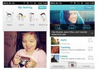
Hablando de la interfaz, hay que decir que está bastante cuidada y tiene un diseño a mi parecer bastante bueno. No es la mejor, pero supera notablemente a Picplz en este aspecto. Botones más redondeados, interfaz más visual y colores más atractivos son las principales bazas de Pudding.to frente a sus rivales en el mundo Android.
Esta aplicación se posiciona como una muy buena alternativa a este tipo de redes sociales por su sencillez y potencial. De igual forma, su lanzamiento en la App Store está muy cercano por lo que podría tener bastante éxito al estar en las dos plataformas móviles más usadas.
Sin duda es una aplicación bastante potente en su función social pero con algunas carencias en la edición de fotos. Todo ello en una interfaz que sin duda es muy agradable. En nuestro caso, para descargarla, podéis hacerlo desde el Android Market de forma completamente gratuita clicando en la imagen.

Seguramente también te interesará...
- Camera MX: La suite fotográfica definitiva para tu Android
- Crea tu propio Blog fotográfico con el nuevo Lightbox
- Aspecto profesional para tus imágenes con Aviary Photo Editor
- Apps Chorras y Rumores de la Semana [#Dedondevoyadescargaryoahora?]
- Transforma tus fotos en pinturas y obras de arte con Painteresque
- Apps Chorras y Rumores de la Semana #mejorqueunferrerorocher
- Fotos panorámicas al estilo Ice Cream Sandwich con estas geniales aplicaciones
- Los mejores vídeos TimeLapse con tu Android y Lapse It
HTC y la certificación Playstation
Tue, 14 Feb 2012 23:49:48 PST
Hace ya un tiempo recibimos a un nuevo integrante de la familia Android, el Sony Ericsson Xperia Play, y muchos (como yo) aficionados a los videojuegos sonreímos como no lo habíamos hecho en años. Por fin un móvil que iba a dejar de tener algún juego decente suelto, para pasar a ofrecer una experiencia completa [...]
Hace ya un tiempo recibimos a un nuevo integrante de la familia Android, el Sony Ericsson Xperia Play, y muchos (como yo) aficionados a los videojuegos sonreímos como no lo habíamos hecho en años. Por fin un móvil que iba a dejar de tener algún juego decente suelto, para pasar a ofrecer una experiencia completa de juego, con sus controles dedicados y la promesa que hizo Sony de que vendría de la mano de los mejores juegos para móvil.
La verdad es que el gigante nipón no mintió, y de hecho añadió algo más a esa promesa inicial, algo que empezó con el Xperia Play, pero que no teníamos muy claro cómo iba a evolucionar, pero parece que cada día se disipan más las dudas al respecto de ello: la Certificación Playstation.
¿Qué es Playstation Certified?
Playstation es, por si alguien no lo sabe, la denominación que hace Sony de sus consolas de videojuegos y el entorno de entretenimiento relacionado con ellas (aunque recientemente su Playstation Network ha cambiado de nombre, pero ese es un asunto que no viene al caso…), y Playstation Certified (PSC o Certificado Playstation) es una especie de sello de calidad que ofrece Sony en una selección de sus productos, garantizando de esta manera que dispondremos en ellos de una selecta colección de títulos que pudimos disfrutar en alguna de sus consolas, o que han sido lanzados en exclusiva para sus dispositivos PSC, garantizando una experiencia de juego que suele estar un escalón por encima del resto.
Un ejemplo claro lo tenemos por ejemplo en Minecraft, y cómo fue lanzado en exclusiva como juego para Xperia Play, y después se abrió al resto del ecosistema Android, y como a día de hoy, la diferencia entre jugar en un dispositivo cualquiera o en el Xperia Play es abrumadora…
Pero sólo funcionará en ese teléfono…
Pues ahí está la gracia. Al poco tiempo del lanzamiento del Xperia Play, empezaron a lanzar teléfonos que compartían la PSC y empezaron a lanzar actualizaciones de software para algunos de los antiguos que los metían en ese selecto grupo de elegidos con los juegos buenos y el apoyo de las desarrolladoras, con lo que ahora nos encontramos con que la gama de teléfonos que llevan grabado a juego fuego el logo de la P y la S es mucho más numeroso que antes.
Aún así, algunos os preguntaréis qué tiene que ver HTC en todo este tinglado, es una cosa para Sony, de Sony y que debería quedar en uso interno de sus productos.
No obstante, Kaz Hirai (Presidente de Sony Computer Entertainment) ha declarado que es el momento de cambiar objetivos, y que no estaría mal ver a medio plazo la PSC en dispositivos de otros fabricantes. Y todo esto cuando empiezan a surgir con fuerza rumores sobre el posible lanzamiento de productos de HTC con esta característica, curioso.
Al principio no le daba mucho crédito, pensaba “Se le habrá ido la olla, es tirar piedras sobre su propio tejado”… ¿o no lo es?
A lo largo de este año vamos a asistir a la consolidación de la Tegra Zone, a la aparición (esperemos que para quedarse por mucho tiempo) de la Game Command de Qualcomm. ¿Quién sabe si aprovechando el parecido de su arquitectura con los PC de escritorio y portatiles Intel no nos mostrará algo similar a lo largo del año? Y claro, ¿por qué iba Sony a quedarse al margen? ¿por qué no aprovechar uno de sus mejores productos y el buen nombre que se ha granjeado por méritos propios entre la comunidad de jugones para poder vender algo incluso a la competencia? Recordemos que gracias a patentes de software Microsoft está consiguiendo más beneficios con Android que los que está consiguiendo con Windows Phone 7…
Hasta (como poco) el MWC de dentro de unas semanas no vamos a tener una confirmación oficial, pero no dudéis que en este caso, si el río suena, agua lleva. Está claro que las plataformas de videojuegos (no tanto el hardware en si) van a ser el negocio del año (Steam lleva unos años con nosotros, OnLive ha entrado con buen pie), quizá sea parte de esa “experiencia de usuario” que se ha empeñado el bueno de Kaz en mejorar para este ejercicio.
Fuentes: Slashgear, AndroidCommunity, GameReactor TV (video)
Seguramente también te interesará...
- Android no es para juegos, ¿o sí?
- Estos serán (probablemente) los mejores smartphones Android de 2012
- El emulador de Play Station para Android, ahora gratis
- Apps Chorras y Rumores de la Semana [#Yseguimosconelfrío...]
- HTC amplia su lista de actualizaciones a ICS y pone fecha
- HTC quiere rejuvenecer ventas y espíritu con Studio
- El MWC será la fiesta de los Android quadcore
- Las patentes y el progreso, ¿inversión de futuro?
El momento más importante para Google y Android: desarrollar su propio Hardware
Tue, 14 Feb 2012 09:44:08 PST
Google es sin duda una de las compañías más grandes e importantes del mundo. Está absolutamente en todo, lo mismo está plantando fibra óptica que actualizando Google + o lanzando una versión de Android nueva. Esta empresa está cobrando una importancia vital en nuestras vidas, porque usamos sus servicios a diario. ¿Qué sería de internet [...]
Google es sin duda una de las compañías más grandes e importantes del mundo. Está absolutamente en todo, lo mismo está plantando fibra óptica que actualizando Google + o lanzando una versión de Android nueva. Esta empresa está cobrando una importancia vital en nuestras vidas, porque usamos sus servicios a diario. ¿Qué sería de internet sin el buscador Google o sin Android?
Sin embargo, parece que no quieren quedarse aquí y buscan ir más allá con nuevos productos y servicios. Por ello Google tiene previsto invertir 120 millones de dólares en una expansión de sus oficinas centrales de Googleplex, con el fin de crear dos nuevos centros de investigación y desarrollo.
Muy probablemente esto tenga que ver con Google X o con muchos de los proyectos secretos en los que Google está moviéndose. Dicen que podría ser un centro de investigación de tecnologías inalámbricas y otro dedicado al desarrollo de dispositivos. Un momento… ¿Dispositivos? Si, no tiene nada de extraño. Todos sabemos el afán que tiene Google por intentar desarrollar hardware propio, de hecho, este se dice que fue uno de los principales motivos por los que compraron Motorola, cuya compra por cierto ha sido aprobada por la UE.
Google ha tocado cada uno de los sectores de la tecnología pero les falta ese que les haga ser completamente autónomo: el hardware. Y es que con tal expansión y tal cantidad de servicios, a los de Mountain View solo les faltan esos medios físicos para independizarse de las otras empresas y consolidarse como una empresa de referencia en todos los aspectos.
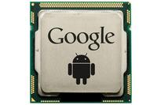
En el caso de hacer esto, Google sería un rival de Apple en todos los campos en los que batallan. Fabricaría hardware y software propio en toda su gama de productos, desde los chromebooks hasta dispositivos Android. Con esto veríamos productos de altísima calidad, y crearían un ecosistema como el que forman los dispositivos de Apple. Y no me malinterpretéis. No quiero decir que me guste el ecosistema de Apple, ese es otro tema, sino estoy diciendo algo completamente objetivo como es la gran integración que hay entre un Mac, un iPhone o un iPad, cosa que no tenemos ahora mismo en Android precisamente por eso, porque Google no crea hardware.
Ha llegado ese momento de dar el salto a este campo y por consiguiente dar ese salto en calidad y en recursos que la compañía necesita. Porque, a pesar de que Google empezó la casa por el tejado fabricando software en vez de hardware, es hora de que se planten los cimientos sobre los que se construirán todos esos productos que la compañía tiene en desarrollo.
Esto marcaría un antes y un después en Android porque nadie conoce mejor el sistema operativo que la propia Google, y si sus planes fueran de desarrollar hardware, podrían crear productos insuperables en calidad por cualquier otro fabricante. No obstante, si Google empezase a desarrollar hardware, muchas de las empresas que trabajan ahora mismo con su sistema operativo buscarían otras alternativas porque a muy pocos les hace mucho “chiste” que Google sea aliada en el campo del software y enemiga en el terreno del hardware.
Entonces, ¿debería Google comenzar a vender su propio hardware? Sinceramente sí. Pero no formar un extenso catálogo como podemos encontrar en HTC o Samsung. Deberían de limitarse a presentar solo unos dos dispositivos al año, simplemente para ir guiando el camino que Android debe de seguir, es decir, lo que viene haciendo con los Nexus pero teniendo ellos el control completo.
Seguramente también te interesará...
- Las cosas que no os hemos contado del CES 2012, hasta ahora
- Motorola Defy Mini y Motorola Motoluxe, dos Android “Low Cost” que llegarán en primavera
- Motorola RAZR, el más delgado, el más rápido y el más chulo de los Android
- Motorola anuncia el MotoACTV, fitness y música en un reloj
- Está Google perdiendo credibilidad con Android?
- HTC confirma su interés por comprar otros sistemas operativos (Web OS)
- Noticias del Lunes. HTC y Eclair, Lee Williams y Android
- El sistema de entretenimiento definitivo de Google: Android Hub
Especial San Valentín Android: Declara tu amor con el robot verde
Tue, 14 Feb 2012 02:46:25 PST
Aunque para mi personalmente días como el de San Valentín me parecen un invento más consumista que otra cosa, es un día especial en el que podemos aprovechar para declarar nuestro incondicional amor por aquel o aquella que significa tanto para nosotros. Y ya que estamos tan avanzados y tenemos nuestros androids con nosotros siempre, [...]
Aunque para mi personalmente días como el de San Valentín me parecen un invento más consumista que otra cosa, es un día especial en el que podemos aprovechar para declarar nuestro incondicional amor por aquel o aquella que significa tanto para nosotros. Y ya que estamos tan avanzados y tenemos nuestros androids con nosotros siempre, ¿qué mejor que hacerlo con unas buenas aplicaciones?

Incluso si no tienes pareja, no te preocupes, también puedes aprovechar para declararte, enviando tarjetas o símplemente entretenerte con algún jueguecito en versión especial. Android está en todas las facetas de nuestra vida, y esta no podía escapar. Vamos a ver algunas aplicaciones de San Valentín que harán de este día algo un poco más divertido.
Detector de Amor
¿No sería todo más fácil si tuviéramos un detector con el que escanear y saber si vamos a tener posibilidades con ese chico o chica que nos gusta? Pues ahora Android te lo trae rápido y fácil. Con esta aplicación podrás saber si tu amor es correspondido con diferentes pruebas. ¿Te atreverás a saberlo? :) Por si acaso aviso que la aplicación no es más que un modo de pasar el rato, no os lo vayáis a creer demasiado!
 Descarga Detector de Amor San Valentín del Android Market
Descarga Detector de Amor San Valentín del Android Market
Felicitación de San Valentín
Si lo tuyo es la expresión en palabras, las poesías y las frases hechas con esta aplicación tendrás un genial repertorio para poder expresar a tu pareja todo lo el amor que sientes. Una buena selección de las frases y felicitaciones más entrañables y románticas para disfrutar de este día especial y que tu pareja se derrita. Puedes compartir las felicitaciones con las diferentes aplicaciones sociales de tu móvil, ¡para compartir en la intimidad o expresar tu amor alto y claro!
Así que ya sabes, escoge la que más te guste o creas que exprese tus sentimientos ¡y a compartir se ha dicho!
Puedes descargar esta curiosa app del Android Market
Photo Heart Locker
Una imagen vale más que mil palabras, eso lo sabemos todos. Si quieres tener más presente que nunca a esa persona amada, poder recordar el bonito momento en que os hicisteis una foto, o simplemente para verla, esta app es ideal. Con ella podrás decorar la foto que tu quieras con unos bonitos adornos de corazones. Crea un fondo animado en el que puedes deslizar tu dedo por encima y que aparezcan fotos, y si pulsamos la pantalla aparecen besos. ¡Si, que pasa! Los androides también tenemos nuestro lado pasteloso romántico.
Descarga Photo heart locker del Android Market
Bubble Blast edición San Valentín
No podía faltar una de juegos en este especial San Valentín. Y es que el amor no está reñido con el juego, es más, se pueden complementar perfectamente. Prueba de ello es esta magnifica versión especial del adictivo Bubble Blast. Las burbujitas de colores se han convertido en corazones de diferentes colores. Muchos niveles donde desencadenar el amor y entretenerse de forma divertida. No se vosotros pero yo me sé de una que se lo va a pasar bomba con el juego.
Descarga Bubble Blast edicion San valentín del Android Market
¿Y vosotros? ¿Qué tenéis pensado para este día? ¿Alguna sugerencia de aplicación para conquistar esos corazones difíciles? Esperamos vuestras sugerencias.
Seguramente también te interesará...
- Especial aplicaciones de San Valentín
- Comparte de una forma distinta tus fotografías con Pudding.to
- El momento más importante para Google y Android: desarrollar su propio Hardware
- Borra partes no deseadas de las fotografías con Remove by Scalado
- Bloquea el acceso a las aplicaciones de tu móvil con App Lock
- Informe: Android e iOS se acercan peligrosamente a su mediana edad
- Linpus consigue portar Android 4.0 Ice Cream Sandwich a nuestros PC
- Realiza llamadas gratis por VoIP con Vonage
Aplicaciones para estudiantes ordenados: Everstudent y Yasp
Tue, 14 Feb 2012 01:02:37 PST
Por poco que guste, siempre llega ese maldito día en que tienes que volver. En mi caso ha sido hoy, día de inicio del segundo cuatrimestre del año. El primer día es duro al levantarse, pero no tanto durante las clases, que suelen ser bastante light. Pero pasada la primera semana, ya no hay presentaciones [...]
Por poco que guste, siempre llega ese maldito día en que tienes que volver. En mi caso ha sido hoy, día de inicio del segundo cuatrimestre del año. El primer día es duro al levantarse, pero no tanto durante las clases, que suelen ser bastante light. Pero pasada la primera semana, ya no hay presentaciones que valgan y empiezan a lanzarse los primeros trabajos a largo, medio y corto plazo. Se regalan, parece que vuelen por los pasillos y evidentemente tu no vas a salvarte.
Una vez acumulados todos los trabajos, podemos olvidarnos hasta que llegue el momento de correr. Sí, todos lo hacemos. Pero en vez de hacer solo eso, previamente podemos hacer un pequeño apaño que nos salvará cuando el día de la muerte llegue. Con las aplicaciones que os traemos hoy podremos organizarnos tanto clases como tareas que nos manden. De esta manera podremos tener un buen horario, además de evitarnos el susto de un trabajo que hay que entregar la mañana siguiente. Estudiantes y personas organizadas en general, estad atentos porque esto os interesa.
Everstudent
Quizá por su nombre ya os oléis algo, pero vamos por partes. Esta aplicación nos proporcionará una forma de hacernos un buen horario del semestre, con tantas asignaturas como cursemos, y tantas tareas como nos quieran mandar. Podremos crear diferentes semestres y trabajar de forma independiente en cualquiera de ellos.
Lo primero que haremos en la aplicación, y de aquí su nombre, es acceder con nuestra cuenta de Evernote. Para quién no lo conozca, Evernote es un servicio para tomar notas y cualquier tipo de información muy popular actualmente. Everstudent es una aplicación que está enfocada a los estudiantes, pero que ofrece sincronización mediante Evernote, de manera que toda nuestra información estará a buen recaudo, además de poder compartirla. Sin duda una buena apuesta.
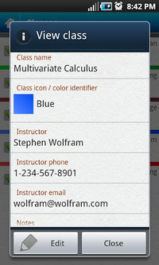Podemos trabajar sin cuenta, pero no dispondremos de sincronización. Una vez dentro podremos crear un semestre. Dentro de él crear las asignaturas que necesitemos, con su horario, su lugar, su profesor, un color y algún comentario. Una vez las tengamos todas, podremos añadir las tareas correspondientes a cada una de ellas, que se ordenaran en un calendario, con el que podremos ver muy claramente lo ocupada que tendremos la semana.
No me acaba de gustar su interfaz, ya que para acceder a un semestre o una clase hay que pulsar un botón home que aparece en la barra superior. Intuitivamente el botón home siempre nos lleva a la pantalla principal, pero aquí es el que nos permite adentrarnos en la aplicación. Nada intuitivo en mi opinión. Otro dato interesante es que la sincronización con Evernote es en una dirección. Esto quiere decir que si modificáis algo allí, no se enviará la modificación hacia Everstudent. Mucho ojo. Por el resto es una aplicación completa, gratuita, y en inglés.
Everstudent Student Planner | Android Market
Yasp!
Si en la aplicación anterior no me gustaba la interfaz, en esta me encanta. Es perfectamente minimalista y muy limpia, pero sin dejar de ser intuitiva. De esas aplicaciones que al ver dices: ¡Olé! Yasp nos permitirá crear un horario para nuestras clases y también añadir las tareas de cada una de ellas.
Nada más abrir ya nos aparece el lunes. Con el botón “+” en la parte inferior podremos añadir una clase. Como en la aplicación anterior, podremos añadir el lugar, el profesor, un color, el horario y el día de la semana. Un detalle genial es que memoriza las clases que ya hemos introducido, junto con el lugar donde se realiza, de manera que si tenemos que añadir otra hora de esa clase la tendremos memorizada. Una vez creada una clase, podemos acceder a ella y añadir una tarea. Con un título, una descripción, y si queremos una fecha límite.
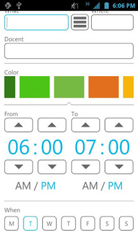Este proceso es el que repetiremos hasta tener nuestro horario chapucero, que esta aplicación nos mostrará de forma preciosa. Al probarla os preguntaréis cómo, porque apenas tiene botones. Pues intuitivamente, si colocáis vuestra pantalla en horizontal, nos aparecerá la vista de la semana completa con todas las clases. Por último tiene la opción de usar un modelo de 2 semanas. Por si nuestras semanas no son iguales. Podremos crear un modelo A y otro B, y los tendremos ambos guardados por separado. Como os he dicho, todo fácil y intuitivo.
Solo puedo hacer que pedir un par de cosas a esta excelente aplicación. La primera que muchos echaremos en falta, un widget tan bonito como la propia aplicación. La segunda es algún tipo de sincronización o backup. Personalmente elegiría Google Calendar. Su previsión de funciones a añadir incluye el widget, recordatorios para tareas y clases, modo diurno y nocturno y soporte para eventos únicos.
Esta aplicación demuestra que para ser buena no hace falta tener mil funciones.
Yasp! Horario de clases | Android Market
¿Qué aplicación usáis para vuestra organización?
Seguramente también te interesará...
- Aplicaciones imprescindibles para estudiantes y gestión de horarios desde tu Android
- Trabaja en equipo con Rypple para Android
- Terminales para Android, ¿fruto de mano de obra esclava?
- Desmontando un mito: las aplicaciones de iOS fallan más que las de Android
- Ordena tus imagenes en un calendario con Photo Calendar–Smart Viewer para Android
- Tutorial para pasar todos tus contactos de tu viejo móvil a un android
- Mantén tus contactos más organizados con Acontags y Kn-contactos
- Un calendario diferente con estilo y original, Emmcal
Bloquea el acceso a las aplicaciones de tu móvil con App Lock
Mon, 13 Feb 2012 08:12:26 PST
Hoy en día llevamos en nuestro móvil una completa biografía nuestra. Tenemos nuestros e-mails, nuestras notas de evernote, nuestros contactos, nuestros mensajes, nuestros datos bancarios, etc. Sin embargo, por mucho patrón de desbloqueo o mucho reconocimiento facial nunca están lo suficientemente seguros. Y es que las manos a las que más miedo hay que tenerle [...]
Hoy en día llevamos en nuestro móvil una completa biografía nuestra. Tenemos nuestros e-mails, nuestras notas de evernote, nuestros contactos, nuestros mensajes, nuestros datos bancarios, etc. Sin embargo, por mucho patrón de desbloqueo o mucho reconocimiento facial nunca están lo suficientemente seguros.
Y es que las manos a las que más miedo hay que tenerle son a la de nuestros conocidos ya que ellos pueden saberse nuestro patrón o tener una foto con la que engañar al face unlock. Por eso me ha parecido interesante la aplicación de hoy. Esta app se llama APP Lock.
El porqué uso esta aplicación es muy sencillo: Cuando dejo el móvil encima de la mesa y me voy, siempre aparece algún que otro amigo o familiar cotilla que intenta echar un ojo a ver que tengo en mi movil. Y en estos casos no basta con un patrón o código porque tanto desbloquearlo delante de ellos ya se lo saben. ¿La solución? Bloquear esas aplicaciones como el GMail con un código diferente el cual no introduzco constantemente y que ellos no saben. Y esto lo puedo hacer gracias a App Lock.
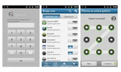
El funcionamiento de la aplicación es muy sencillo, la abrimos y nos pide que introduzcamos un código y una pregunta de seguridad con su correspondiente respuesta. Esto hará que podamos desbloquear el móvil sin ningún problema en caso de olvidar el código que habíamos establecido en el paso anterior. Si no nos gusta la idea de meter un código también podemos establecer un patrón, el cual puede ser diferente al de desbloqueo normal.
Y ahora diréis, esto no sirve de nada ya que podemos desinstalar la aplicación y listo. Pues no, porque el desarrollador también ha pensado en eso y podemos activar una serie de opciones que bloquean el desinstalador de esta aplicación, de forma que para desinstalarlo tengamos que introducir el código establecido.
La aplicación al menos a mí me va a ser muy útil para que cuando mis amigos o mis familiares me pidan prestado el móvil no entren en mis redes sociales a modificarme cosas o me manipulen el GMail sin mi permiso. De hecho, con un patrón un tanto complicado y esta aplicación podríamos decir que los datos de nuestro móvil están prácticamente blindados ante los métodos más sencillos.
Sin duda muy pero que muy útil esta aplicación y totalmente recomendable. Para descargarla accede al Android Market clicando en la imagen. Lo encontrarás de forma completamente gratuita sin ningún problema.
Seguramente también te interesará...
- Apps Chorras y Rumores de la Semana [#Yseguimosconelfrío...]
- Automatiza tus estados en las redes sociales con Seesmic Ping
- Tutorial para dejar tu android como el primer día
- Apps Chorras y Rumores de la Semana [#Peroquefríoquehace...]
- Camera MX: La suite fotográfica definitiva para tu Android
- Desmontando un mito: las aplicaciones de iOS fallan más que las de Android
- Juegos Android de la Semana: Doble de plataformas y clásico
- Apps Chorras y Rumores de la Semana [#LaresureccióndeFileServer]
LG Prada 3.0 con Vodafone, diseño y distinción
Mon, 13 Feb 2012 02:47:49 PST
El mundo de los smartphones es como el de los coches, los hay de muchos precios, gustos y formas y sobre todo de categorías, y en muchas ocasiones, las categorías no atienden a mejor o peor, sino también a calidad, distinción, lujo y marcas. Es le caso del LG Prada 3.0 que Vodafone presenta en [...]
 El mundo de los smartphones es como el de los coches, los hay de muchos precios, gustos y formas y sobre todo de categorías, y en muchas ocasiones, las categorías no atienden a mejor o peor, sino también a calidad, distinción, lujo y marcas. Es le caso del LG Prada 3.0 que Vodafone presenta en primicia, la tercera versión de este smartphone, más distinguido potente e igual de especial que sus antecesores.
El mundo de los smartphones es como el de los coches, los hay de muchos precios, gustos y formas y sobre todo de categorías, y en muchas ocasiones, las categorías no atienden a mejor o peor, sino también a calidad, distinción, lujo y marcas. Es le caso del LG Prada 3.0 que Vodafone presenta en primicia, la tercera versión de este smartphone, más distinguido potente e igual de especial que sus antecesores.
Vamos a empezar con sus características técnicas para ver luego sus tarifas y algunas otras consideraciones:
- Pantalla de 4,3″ NOVA de 800 nit de luminancia (800 x 480)
- Memoria interna de 8 GB
- Procesador Dual Core de 1 Ghz y Doble canal
- Cámara de 8 mpx
- Wifi, GPS, Bluetooth, Sensores…
- Android 2.3 Gingerbread con interfaz propia
- Batería de 1540 Mah y 8,56mm de grosor
Lo que podemos ver a simple vista es que es un terminal grande, on una potencia destacable pero sin ser espectacular, pero sobre todo equilibrado y con un diseño, tanto en sus construcción externa, impecable, como en la interna, la interfaz propia que han creado, minimalista, muy bonita y ligera, todo un acierto que le va como anillo al dedo a un teléfono de la marca Prada.
No está de más recordar que el LG Prada 1.0 fue el primer smartphone del mundo con pantalla táctil, y ahora, aunque no sea innovador, como todas las piezas de “lujo” o con cierto sello o marca, apuestan por la estabilidad y la sencilla elegancia, aunque a nosotros,nos gustaría que precisamente por esa “distinción” hubiesen añadido algo especial en cuanto a aspectos tecnológicos.
.
En Vodafone estará disponible sólo (de momento) en la Tienda Online a partir del 20 de Febrero y en la Página de Facebook de Vodafone desde hoy mismo hasta el 19 en periodo promocional con unidades limitadas por 49€ con la tarifa @L (59,9€ al mes)para clientes que hagan portabilidad. También puede adquirirse a través del Programa de Puntos de Vodafone y para clientes que hagan migraciones (paso de prepago a contrato). También por 379€ y 600 puntos hasta el 16 de Febrero.
-
Para el resto de tarifas, los precios “estimados” serían estos:
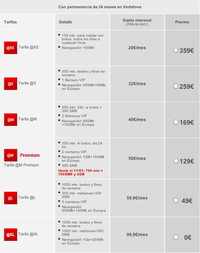
El precio libre asciende hasta los 659€, un lujo. A si que de momento, para verlo en otras operadoras tocará esperar. Me parece un móvil muy bonito, pero caro, y cuando digo caro, me refiero a sobrevalorado en precio, pero a quien le guste y pueda permitírselo, desde luego que no se llevará un mal móvil en absoluto. ¿Tu que opinas?
Seguramente también te interesará...
- Galaxy Nexus en Vodafone: Precios, puntos y detalles de su llegada a España
- Samsung Galaxy SII Blanco en Vodafone: Listado de Precios y Puntos
- Vodafone presenta novedades en sus tarifas y opciones para sus clientes de cara a junio
- Precios de LG Optimus 2X, Sony Ericsson Xperia Arc y Xperia Play con Vodafone
- Ahorra en tu factura telefónica, con la ayuda de Android (y sin ella también)
- Precios del HTC Desire HD en Vodafone y descuentos y promociones navideñas
- Samsung Galaxy S con Vodafone y Orange y nuevas tarifas Vodafone
- Vodafone presenta en primicia el Samsung Galaxy Y para prepago
Informe: Android e iOS se acercan peligrosamente a su mediana edad
Mon, 13 Feb 2012 00:31:27 PST
Un grupo de analistas de mercado (Strategy Analytics) y un importante analista de negocio (Mark Sue) se han unido para realizar un estudio profundo sobre la vida media de un sistema operativo móvil. De este análisis podemos sacar varias conclusiones, y cuadra perfectamente con el ciclo de vida del SO de Blackberry, de Symbian, de [...]
Un grupo de analistas de mercado (Strategy Analytics) y un importante analista de negocio (Mark Sue) se han unido para realizar un estudio profundo sobre la vida media de un sistema operativo móvil. De este análisis podemos sacar varias conclusiones, y cuadra perfectamente con el ciclo de vida del SO de Blackberry, de Symbian, de Windows Mobile… ¿Están Android e iOS acercándose peligrosamente a una crisis de mediana edad?
La premisa centra sobre la que se basa este estudio es que un SO móvil tiene una vida útil de 10 años de desarrollo, lo cual parece cumplirse si tenemos en cuenta la muerte de Windows Mobile (2000-2001) y Palm (1996, con renacimiento en 2002), y el estado comatoso de Symbian y Blackberry OS (2001-02).
Strategy Analytics nos muestra en un gráfico el estado de los ciclo de vida de todos estos sistemas operativos, y nos viene a sugerir que tanto el Sistema Operativo de Apple como el de Google están destinados a seguir el mismo camino que sus predecesores, si bien nuestro SO favorito no sigue exactamente la misma tendencia de crecimiento que sus congéneres.
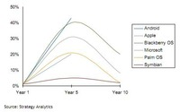
Android, de momento, se escapa al movimiento curvilíneo que sí vemos en el resto de competidores pasados y presentes y esto es debido a que nunca habíamos visto un SO multifabricante y multiplataforma de tal magnitud, la propia variedad en todas las familias de precios hace que no sea comparable en este sentido y de ahí que la pendiente sea tan diferenciada.
Si bien creo que este análisis dice la verdad hasta lo que conocemos hoy en día y se han cumplido los parámetros en cuanto a ventas de dispositivos, cuota de mercado y evolución en el ciclo de vida de los sistemas operativos, no tiene en cuenta algunos factores ambientales. Primero, los previamente muertos (o a punto de morir) eran sistemas que luchaban con una feroz competencia por varios frentes, ahora mismo, la “pelea” se ha focalizado en 2 competidores (a lo sumo 3, pero aún en pañales está Windows Phone), por lo tanto, y lo que quiero decir es que esa duración media de 10 años no es más que fruto de la aparición de nueva oferta y nueva competencia, mientras que ahora mismo, no parece que nadie se vaya a unir a la terna de participantes, a no ser que los fabricantes tengan a bien empezar a apostar por sus propios SO (HTC y Samsung lo han intentado y lo seguirán intentando), pero no creo que sea el caso, teniendo en cuenta que ahora mismo caerían en el olvido y no estamos para tirar dinero en proyectos que poco futuro pueden tener. Lo multimarca es el futuro, precisamente por poder contar con el apoyo de muchos fabricantes, amén de poder ajustarse más a todos los rangos de edad y a todos los clientes objetivo posibles. Apple se mantiene porque es Apple y por el “efecto religión”, y lo seguirá haciendo, al menos por otro lustro más, eso seguro.
El segundo factor es el efecto tablet, es decir el desdoblamiento de los SO hacia dos caminos y la convergencia entre ellos, smartphone y tablet, y si me apuráis, también televisión. Esto hace que la capacidad de “refresco” de éstos no sea la que podíamos ver antiguamente, pues se quedaban obsoletos con bastante facilidad.
¿A vosotros os parece que Android e iOS están cerca de una crisis de mediana edad? ¿La tendencia de Android parece desafiar las reglas del mercado? ¿Creéis posible que aparezca competencia digna de aquí a 2-3 años que les hagan caer drásticamente en su porcentaje de cuota de mercado? ¿Se acerca el declive de iOS y Android?
Via | Apple Insider
Seguramente también te interesará...
- Android contra el mundo, o el mundo contra android: Análisis de iOS, BBX y WP 7
- La solución completa para exportar tus contactos de Nokia o Blackberry a Android
- Android, empresas y PYMES
- Android VS Windows Mobile
- Desmontando un mito: las aplicaciones de iOS fallan más que las de Android
- ¿Puede ser Blackberry la Nokia de Android?
- Esto es sólo el comienzo. La irrupción de los smartphones en nuestras vidas
- Apps Chorras y Rumores de la Semana (#Depresiónpostvacacional)
Guerra de navegadores Android: Chrome Vs Firefox Vs Opera Vs Dolphin Browser
Sun, 12 Feb 2012 10:23:27 PST
Hace escasos días salió por fin la esperada versión de Chrome para Android, aunque fuera solo para terminales con ICS. Poco tardé en bajarlo y probarlo, y poco me bastó también para que se quedara de momento como mi navegador por defecto. Aunque claro, luego a mucha gente le viene la duda que a menudo [...]
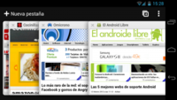
Hace escasos días salió por fin la esperada versión de Chrome para Android, aunque fuera solo para terminales con ICS. Poco tardé en bajarlo y probarlo, y poco me bastó también para que se quedara de momento como mi navegador por defecto.
Aunque claro, luego a mucha gente le viene la duda que a menudo aparece. ¿Con cual me quedo? ¿Que navegador es el mejor? Para empezar, el mejor puede ser uno o ninguno, todo depende de las preferencias y necesidades de cada uno, así que hablar del mejor en términos absolutos es algo delicado. De todas formas, aquí os daremos un par de detalles de algunos de ellos (los más conocidos), y yo os daré mi opinión al respecto de cada uno, para que vosotros valoréis y podáis tener un poco más a mano los rasgos básicos y luego ya decidís con cual os quedáis.
Funciones de Navegación, lo básico.
Empezando por el nuevo Chrome, y centrándonos en su uso básico y funcional, vemos como usa prácticamente toda la pantalla exceptuando la barra superior de búsqueda que se mantiene siempre fija, donde encontramos el botón de menú y el de acceso a pestañas. El resto de navegadores, en cambio, al desplazarnos hacia abajo por la página ésta barra superior se desplaza con ella, dejándonos toda la pantalla disponible para su uso. Algunos como Opera o Dolphin pueden ocultarse completamente siendo accesibles solo a través del botón menú o desplazando la pantalla hacia un lado; o por ejemplo el de serie permite activar una función de Labs que no muestra un menú emergente al pulsar en los bordes de la pantalla, lo que nos deja al 100% su uso para navegar.
A priori puede parecer un inconveniente, pero la barra tampoco es demasiado grande y con esto nos ahorramos algo de tiempo si queremos realizar una nueva búsqueda, ya que no tenemos que desplazarnos a la parte superior de la página o acceder a la búsqueda mediante los menús. En este aspecto el resto de navegadores ofrecen más posibilidades que Chrome.
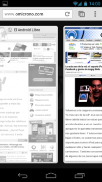En cuanto al acceso, por ejemplo, a las diferentes página u opciones, Chrome tiene 2 formas de pasar entre pestañas. Una de ellas es deslizar de izquierda a derecha o viceversa desde un borde de la pantalla para cambiar de una pestaña a otra, o si lo preferimos podemos acceder al botón de la barra superior que nos mostrará todas las página abiertas en “cascada”. En cuanto al acceso a los ajustes, se hace usando el ya típico botón de menú de ICS, lo que nos despliega una lista donde encontramos los botones adelante, atrás, pestañas de incógnito o el acceso a los ajustes, entre otros.
Si abrimos una nueva pestaña, lo hace mostrando una pantalla principal con las páginas más visitadas y vemos abajo tres accesos directos. El primero corresponde a estas páginas, el segundo son los favoritos, que los separa en los que tenemos en el móvil y los del ordenador gracias a la sincronización con nuestra cuenta, y el último acceso corresponde a las pestañas que tenemos abiertas en nuestro navegador de escritorio, mostrando incluso cuándo se realizó la última sincronización y desde que equipo, o mejor dicho, desde que SO. Estas últimas opciones muy, muy útiles para mi.
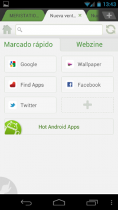Dolphin por su parte, hace uso de las pestañas tal cual, es decir, mostrando en la parte superior el nombre de cada página abierta. Para mi esto no es ninguna ventaja (al menos en móviles), ya que te muestra solo 2 pestañas, y el resto quedan “ocultas” teniendo que desplazarnos igualmente por ellas si tenemos varias. Si deslizamos la pantalla hacia la derecha tenemos acceso a los marcadores y si lo hacemos a la izquierda nos muestra los complementos, algo que mucha gente valora. En mi caso, la verdad es que no los uso.
Y a parte de esas extensiones, algo que hizo a Dolphin destacar sobre el resto fue el hecho de poder crear unos gestos para usar a modo de acceso directo. Así, por ejemplo, si consultamos a menudo una determinada página, en lugar de añadirla a favoritos o incluso al Speed Dial que se nos muestra al abrir una nueva pestaña, le asignamos un gesto y en un plis ya la tendremos abierta. También tiene opción de sincronizar los favoritos, pero en este caso no entre el PC, sino más bien entre los diferentes dispositivos en los que usemos Dolphin.
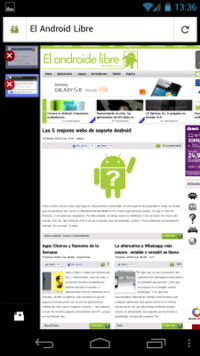Firefox es parecido al anterior, ya que también hace uso de los “laterales ocultos” de la pantalla, teniendo a la izquierda las pestañas y a la derecha los botones de navegación. El acceso a los favoritos se hace pulsando sobre la barra de navgación, lo que nos despliega un menú con el historial, favoritos o, al igual que en Chrome, las pestañas abiertas en el navegador de escritorio, por lo que si somo usuarios de Firefox en nuestro ordenador, sería muy interesante usar Firefox para nuestro Android si queremos aprovechar esta opción.
Aquí también tenemos extensiones, como en la versión de escritorio y otra curiosidad es que al escribir en el campo de búsqueda nos da la opción de realizarla directamente en Google, Wikipedia o Twitter, por ejemplo.
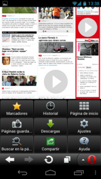Y por último, Opera, “el navegador en discordia”, ya que aún siendo un gran navegador, nunca ha conseguido tener tantos usuarios como el resto. Por su parte, decir que la interfaz es la que más me gusta; la más cuidada y la que más agradable me parece.
El uso de las pestañas lo hace mediante una lista que aparece abajo al pulsar el botón correspondiente, siendo muy rápido y cómodo. En la barra inferior encontramos también los botones de navegación, que como he dicho, podemos ocultar completamente. Y a la derecha tenemos el botón de “menú”. Con él accedemos a los marcadores, el historial o a los ajustes, y entre ellos encontramos también la función de sincronización con el cliente de escritorio, solo que aquí, creo (y digo creo porque no he tenido ocasión de probar aún), solo sincroniza marcadores, y no pestañas abiertas, pero ya es algo muy positivo, y más hoy con tantos dispositivos que usamos a la vez.
Y en este caso, la función “estrella” de Opera es la opción de Opera Turbo, que lo que hace es comprimir los datos de la web que estemos cargando para así poder acceder a ella de una forma más rápida, pero yo no he notado una diferencia realmente importante.
Si hablamos ahora de velocidad de navegación, me atrevería a decir que las diferencias que hay entre unos y otros es mínima, pudiendo haber un par de segundos en cargar completamente una página, algo que no creo que sea trascendental ni estrictamente necesario. Para hacer una comparación “estúpida” tal vez, es como comparar 2 coches en un 0-100Km/h. sobre el papel. Uno lo hace en 7.2 y el otro en 7.5. ¿Realmente decidiremos qué coche comprar por esas décimas? Por supuesto, me quedo con el más rápido aunque sea menos cómodo y más feo que el otro; total, seguro que nunca lo intentaremos o si lo hacemos, puede que nunca lleguemos a conseguir esos números.
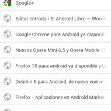 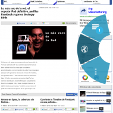 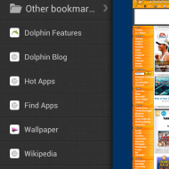
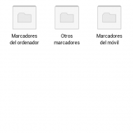 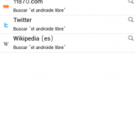 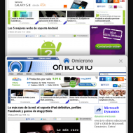
Y así, en aspectos generales y hablando ahora en conjunto, diría que Chrome es un muy buen navegador teniendo en cuenta que aún está en fase Beta y seguro que faltan cosas por pulir y opciones que añadir; las transacciones entre pestañas, efectos “visuales” y facilidad de uso, además de la sincronización con el cliente de escritorio han hecho que se convierta en mi navegador por defecto. Peeeero, no diré que sea el mejor, ya que navegador en mano, el resto disponen de muchas más opciones de configuración, aunque si por algo se ha caracterizado siempre Chrome es por su sencillez y eso puede ser lo que haga que me decante por él, creo dejando de lado mis prioridades, me quedaría primero con Opera por su magnífica interfaz, seguido de Chrome y por último Firefox y Dolphin, o Dolphin y Firefox.
Descargar Chrome (Solo ICS)
Descargar Firefox
Descargar Opera
Descargar Dolphin
Repito que esa es mi valoración atendiendo a mis prioridades, y como vemos, todos los navegadores que hemos comentado aquí (que no son todos los que hay, obviamente, pero si los más conocidos y usados), tienen características muy similares, solo que varían en pequeños aspectos. Lo mejor es que como siempre, los probéis todos durante unos días y luego decidáis cual os viene mejor, por los motivos que sean.
Seguramente también te interesará...
- Ranking de los 10 mejores navegadores web para Android
- Reemplaza las aplicaciones del sistema Android con las mejores alternativas
- Navega por la web: los mejores navegadores para Android
- Dos navegadores Android impresionantes: Ninesky Browser y Sleipnir Mobile
- Dos navegadores web para Android con los que vas a alucinar: Boat Browser y Life Browser
- Greasemonkey para Android con TamperMonkey
- 2 Nuevos Navegadores alternativos: MIUI Browser y Dolphin Mini
- Firefox 10 para android ya disponible y la 11 y 12 beta también
Las 5 mejores webs de soporte Android
Sun, 12 Feb 2012 02:12:04 PST
Entre muchas de las cosas que hago en esta preciosa comunidad, es encargarme de responder a todas las dudas que me planteáis por correo a androide@elandroidelibre.com. Como supongo que sabréis, no soy un dios de Android, ni sé todas las respuestas. Por descontado, no tengo todos los teléfonos ni me se todos los trucos del [...]
Entre muchas de las cosas que hago en esta preciosa comunidad, es encargarme de responder a todas las dudas que me planteáis por correo a androide@elandroidelibre.com. Como supongo que sabréis, no soy un dios de Android, ni sé todas las respuestas. Por descontado, no tengo todos los teléfonos ni me se todos los trucos del mundo. Aún así, doy solución al 90% de las consultas que me planteáis. ¿Cómo? Pues utilizando correctamente internet. En concreto, 6 webs.
1. XDA-DEVELOPERS
Todo. La biblia. La mayor comunidad de desarrolladores Android que exista. En este foro encontraréis todo y más de lo que os podáis imaginar: ROMs, tutoriales, soluciones a problemas, temas para personalizar los teléfonos, accesorios. Todo. Eso sí, está en inglés (pero para algo existe el Google Translate).
Si es la primera vez que entráis en XDA, tenéis que visitar dos cosas:
- La sección de Android en general
- Buscar el sub-foro de vuestro teléfono
Una vez encontréis vuestro teléfono empezad a alucinar con la cantidad de consejos, tutoriales y soluciones de todo tipo que hay. Lo dicho, visita obligatoria.
PD: Incluso tienen aplicación para Android
2. HTCManía
Personalmente en HTCManía he encontrado siempre una solución a la mayoría de problemas que he planteado. Para que os hagáis una idea, es como un XDA en pequeñito y en castellano. Tienen un gran número de terminales diferentes y encontraremos contenido bastante jugoso. Así pues, de la misma manera que en XDA, lo que os recomiendo que hagáis es buscar el sub-foro de vuestro teléfono y empezar a buscar información o preguntar vuestras dudas.
Un “pro” bastante importante es que es en general español y por tanto:
- Se habla de terminales llegados a España
- Se mencionan y discuten las operadoras españolas
- Se hablan de tiendas que operan en España
- Y mucho más
Ya sabéis, ¡echadle un vistazo!
3. Grupo Android
Descubrí este foro/web hace poco y la verdad es que es alucinante. Tenemos una gran cantidad de contenido de un gran número de teléfonos. Una ventaja que tiene Grupo Android es que está más enfocado a todo Latinoamérica. Por tanto, aquí encontraremos un gran número de modelos exclusivos o que tienen más presencia en los países de América Latina. Así pues compañeros, ya sabéis donde encontrar ayuda para esos terminales que no se encuentran en Europa ni Estados Unidos.
En esa misma línea os recomiendo también que visitéis ChileAndroid donde encontraréis más información del mismo estilo.
4. ModMyMobile
Esta web la pongo aparte por que me ha salvado en más de una ocasión. Digamos que es la Biblia de los teléfonos Motorola. He buscado cosas similares para otras marcas, pero realmente no hay nada como ModMyMobile. Aquí encontraréis TODA la información para todos los teléfonos Motorola. Pero cuando digo toda es TODA. Increíbles tutoriales, soluciones, trucos, consejos. Vamos, imprescindible si tienes un Motorola. Por otro lado, no sirve de nada si no lo tienes ;)
5. El mejor: GOOGLE
Sí amigos, no es ninguna tontería. Lógicamente yo no sé inmediatamente si el Motorola Pro XT610 se puede rootear, ni como se soluciona el problema de una wifi en un teléfono que no tengo. Pero he aprendido a usar correctamente Google, y esa es la clave de muchas cosas. Es el mayor foro que podáis encontrar nunca, y el más sencillo de utilizar. En serio amigos, basta con escribir en Google
“rootear” + nombre de vuestro teléfono
y os dirá cómo rootearlo o más importante, si se puede o no. Lo dicho, el 60% de mis respuestas se encuentran entre los primeros resultados de Google así que os recomiendo de verdad que antes da nada intentéis realizar una búsqueda rápida en Google a ver qué tipo de resultados retorna. Y luego consultarnos sin ningún problema.
Para finalizar, os recuerdo las vías de contacto que tenemos (esas que están arriba de todo a la derecha de la web)
- Facebook
- Twitter
- Google +
- Un correo
Nota del autor: Estos foros/webs son una recomendación personal. Son los que más utilizo. Por descontado hay muchísimos más como
- Movilzona
- GSMspain
- Android-spa
- Modaco
- Foro Android.es
- Foro Androidsis
Seguramente también te interesará...
- Contrastes Android: el trato de Verizon versus la política de Netflix
- Android Ice Cream Sandwich, ¿la penúltima oportunidad?
- Los mejores accesorios para tablets
- Android volcado con Japón
La alternativa a Whatsapp más segura, estable y versátil se llama Spotbros
Sat, 11 Feb 2012 07:23:57 PST
Si digo que os voy a presentar una aplicación de mensajería instantánea es probable que penséis, ¿otra que se supone va a competir contra whatsapp? Y es que tras innumerables alternativas siempre encontramos que cualquier aplicación que quiera luchar en el mismo campo parte con una desventaja evidente aunque incluso su desempeño sea superior por [...]
Si digo que os voy a presentar una aplicación de mensajería instantánea es probable que penséis, ¿otra que se supone va a competir contra whatsapp? Y es que tras innumerables alternativas siempre encontramos que cualquier aplicación que quiera luchar en el mismo campo parte con una desventaja evidente aunque incluso su desempeño sea superior por funciones o estabilidad; la base de usuarios.
Por ello si de verdad una aplicación quiere hacerse un hueco para seguir creciendo debe presentar algo que no se limite a lo mismo que ya hemos visto, aunque se suponga que lo hagan mejor. Es el caso de Spotbros, que para mí en pocos días se ha convertido en una de mis aplicaciones imprescindibles aunque se encuentre en estado beta.
Spotbros, la seguridad como bandera, y mucho más
La primera noticia que leí acerca de Spotbros hablaba de un whatsapp vitaminado que permite mantener conversaciones seguras al cifrar su contenido, algo que precisamente ha supuesto una de las principales quejas contra whatsapp al comprobar que la privacidad de lo escrito deja mucho que desear. Poco después un artículo, que presentaba a Spotbros como “el Whatsapp de las revoluciones”, volvía a recalcar la importancia de su seguridad lo que lo puede convertir en una herramienta de comunicación móvil muy útil en lugares donde la libertad de expresión puede resultar una utopía.
La privacidad de nuestras conversaciones es un punto a destacar en Spotbros ya que cifra las conversaciones con el algoritmo AES 256, el mismo usado en las comunicaciones de la Agencia Nacional de Seguridad de EE.UU. Por otro lado los mensajes que se almacenan en su servidor son borrados a los 30 días por lo que no debemos preocuparnos de que se hace con nuestras conversaciones almacenadas.
El proceso de registro es tan sencillo como en otras aplicaciones verificando tu número de teléfono, tras lo cual se crea un perfil que queda asociado a tu número de teléfono, email y SBCode (el equivalente al PIN de Blackberry Messenger) de forma que si debes instalarlo más tarde en otro terminal puedes acceder a tu misma cuenta. A partir de ahí entramos en la aplicación y la ponemos a prueba para comprobar si se trata “sólo” de un whatsapp seguro.
Agenda y mensajería instantanea
El primer uso de Spotbros es, como no puede ser de otra forma, el de la mensajería instantánea privada. Enviar mensajes a nuestros amigos es tan fácil como en cualquier otra aplicación. Por un lado Spotbros te mostrará en su agenda automáticamente a tus contactos de Android que ya usan la aplicación, por otro, si queremos hablar con alguien que no se encuentra en tu agenda desde Spotbros podremos buscar y agregarlos sabiendo o su número de teléfono, o su correo electrónico o su SBCode. Sin embargo aquí hay otra diferencia a destacar. En otras aplicaciones si conoces el número de otro usuario podrás enviarle privados aunque él no te tenga en su agenda, lo que suele dar lugar a un “¿y quién me está escribiendo?” a veces algo incómodo.
Con Spotbros será necesario que ambos usuarios tengan el teléfono del otro y si no es así deberás enviarle una solicitud de amistad para que te acepte y podáis empezar a chatear en privado, lo que añade un grado de confianza y a la vez cierto toque social que se ve reforzado por otras funciones. Por un lado te aseguras de recibir privados de quien tú quieres, por otro aumentas la privacidad ya que por ejemplo vale con que des tu SBCode a otro usuario para empezar a hablar con él sin que tenga que conocer tu número de teléfono.
Por supuesto los usuarios pueden ser también bloqueados y desbloqueados en cualquier momento y si quieres llamar al atención de un contacto siempre puedes enviarle un ping en la conversación privada.
Volviendo a las opciones de privacidad puedes elegir en Spotbros que tu lista de contactos no pueda ser vista, que puedan acceder a ella sólo otros contactos, o que cualquiera pueda verla.
Como apunte desde dentro de un privado, grupo o spot puedes cambiar rápidamente a otra conversación sin tener que volver atrás si pulsas arriba a la izquierda en el icono con los típicos “buddies” de mensajería desplegando un listado de avatares con las conversaciones que tengas abiertas.
Grupos y Spots
Algo que no puede faltar en las aplicaciones de mensajería para móvil es la creación de grupos en los que poder entablar conversaciones con varios de tus contactos pero Spotbros va un paso más allá. Aparte de poder crear o ser invitado a grupos privados también se pueden crear y buscar Spots a los que unirse.
Los Spots son grupos públicos ubicados en una localización concreta, es decir, los crearás o los podrás encontrar por tí mismo dependiendo de donde te encuentres. Pongamos un ejemplo, anoche salí por una conocida zona de bares de Madrid, y en Spotbros me dirigí a la pestaña de Spots, la aplicación me localizó por medio de las antenas de telefonía (no se hace uso del GPS) y buscó los más cercanos mostrando que existían varios asociados a la zona e incluso algunos que se habían creado sobre locales en concreto. De la misma forma creé un Spot en la zona sobre el bar de unos amigos para que sirva como punto de encuentro entre clientes habituales y los que quieran conocer un sitio nuevo. Es decir, podría haber elegido que local visitar simplemente entrando en sus Spots y viendo los estados, valoraciones, etc que se compartieran… o haberme enterado de una fiesta y unirme a ella.
Los Spots agrupan a usuarios que comparten el interés por el tema del mismo, por ejemplo su bar favorito, pero también pueden ser Spots sobre distintas temáticas, noticias, libros, etc.
Una vez entres o crees un Spot podrás participar en él aunque ya no te encuentres en esa zona ya que se queda guardado en la agenda de Spotbros, lo que permite seguir compartiendo estados con el resto de usuarios de ese Spot. Así mismo aunque no encuentres un Spot por no poder acercarte a su zona de creación también puedes ser invitado por uno de tus contactos si piensa que el tema del mismo puede ser de tu interés. Por ejemplo podemos encontrar o que nos inviten al Spot Apps Android donde intercambiar estados sobre aplicaciones interesantes. De la misma forma un Spot (al igual que los grupos) tiene su propio perfil y SBCode (lo podemos ver en su perfil a través del menú) por lo que también puedes buscarlo para unirte si un usuario te envía el código.
¿Y por qué hablo de compartir estados?. La forma de comunicarse en un Spot no es la misma de una conversación o grupo privado, en los Spot se trata de compartir estados, opiniones, consejos, al más puro estilo Twitter, para ello sólo deberás arrastrar la barra para acceder a escribir un mensaje y enviarlo al Spot.
El toque social que mencionaba antes vuelve a ponerse de manifiesto en los Spots porque puedes mirar el listado de usuarios que participan en el mismo y enviar una solicitud de amistad a cualquiera de ellos si os interesa poder hablar también en privado. Evidentemente también podrás abandonar un Spot en cualquier momento.
Shout
Poder enviar un Shout o recibirlo es otra de las funciones que hace que Spotbros vaya mucho más allá de las aplicaciones a las que estamos acostumbrados hasta ahora. Poder enviar un Shout es como tener a tu disposición un altavoz para poder enviar un estado a los usuarios los que se encuentren en un área cercana (les llegará a las 100 personas más cercanas en un radio de 1,5km).
Preguntados acerca del funcionamiento de los Shouts el equipo de Spotbros me dio un ejemplo claro del uso del mismo y no encuentro una forma más clara de explicarlo. Durante el pasado tsunami de Japón se pudo ver la imagen de una mujer que desde lo alto y megáfono en mano intentaba avisar a toda la gente que pudiera de lo que se acercaba. Un Shout sería tener ese megáfono en el teléfono para enviar un mensaje rápido a todos los usuarios que se encuentren en un área cercana. Además si mantenemos pulsado un Shout no sólo podremos ver el perfil de quien lo envió, enviarle invitación, copiarlo o eliminarlo, sino que también podremos hacer Reshout, es decir, de la misma forma que en Twitter, recompartir ese estado que se encuentren en tu zona y que por lo tanto el aviso se vaya transmitiendo.
Los Shouts te pueden servir para avisar a todos los usuarios alrededor de cualquier cosa que esté pasando rápidamente, de esta forma encontramos usos tan importantes como prevenir de cualquier problema, o algunos más cotidianos como incluso darle un uso publicitario y emplearlo para desde un local avisar a los usuarios cercanos de una oferta concreta, o como usuario avisar a los más cercanos de que acabas de encontrar un sitio en liquidación con aunténticas gangas.
Como curiosidad al enviar un Shout la aplicación te indica a cuantos usuarios ha llegado y a qué distancia indicando igualmente si no había ningún usuario lo suficientemente cerca.
Mensajes multimedia
En los mensajes multimedia podemos comprobar que Spotbros se encuentra en fase beta y sin embargo lo que apunta es muy interesante. De momento se pueden adjuntar imágenes tanto desde la galería como tomándolas en el momento, pero si digo imágenes en plural es porque en un sólo mensaje puedes juntar hasta cuatro imágenes en vez de tener que ir enviando una por una.
Cuando recibas un mensaje multimedia éste estará señalado por una pequeña flecha a la derecha, lo que indica que se puede abrir, algo así como que el mensaje muestra el encabezado y a continuación puedes acceder al contenido completo como si fuera un correo electrónico.
En el momento de abrir ese mensaje, y no antes, será cuando se descarguen las miniaturas para la visualización de las fotos, algo muy importante si preferimos no descargar ningún contenido porque no tengamos suficiente cobertura en el momento o queramos esperar a encontrarnos en una red wifi y no consumir nuestra tarifa de datos. Ya desde dentro del mensaje multimedia podremos elegir descargar las fotos o verlas directamente a pantalla completa.
De la misma forma Spotbros se integra en las funciones de compartir de Android así que si en la galería tienes una foto abierta y eliges enviarla podrás abrir Spotbros desde ahí y enviar un mensaje, un Shout o mandarla a un Spot.
Justo en el momento que estemos creando un mensaje multimedia (al seleccionar adjuntar algún archivo) veremos un contador de caracteres que nos indica otra de las particularidades del servicio, una comunicación intantánea desde un dispositivo móvil, por lo que los mensajes tendrán un tope de 200 caracteres.
Recalco que Spotbros se encuentra en fase beta y su equipo de desarrollo indica que es algo en lo que se está trabajando y sólo el primer paso de muchas novedades.
Notificaciones
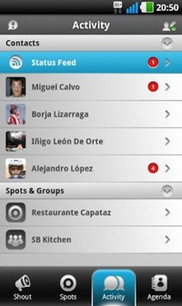Una duda que puede surgir para quien use Spotbros es como se gestionan las notificaciones de la aplicación ya que desde el menú no podemos desactivarlas y nos encontramos con que podemos recibir mensajes de conversaciones privadas, grupos, spots y shouts.
En principio se echa en falta de momento que se pueda desactivar por completo en un sólo ajuste el recibir notificaciones ya que si accedemos a las opciones de Spotbros sólo podemos elegir activar o desactivar la vibración en las mismas. ¿Significa esto que no podamos evitar que nos esté sonando el teléfono todo el rato?. No. Spotbros permite una configurar de forma mucho más selectiva los avisos que deseamos recibir. Así pues puedes silenciar los shouts, un grupo, un spot o a un contacto concreto sin afectar a los demás y mientras sigues recibiendo los mensajes sin problemas.
Por supuesto volviendo a comparar con Twitter, si deseas dejar de recibir ya no sólo privados sino también leer estados en un Spot o Shouts de alguien concreto no tienes más que acceder a su perfil y bloquearle.
Si dejamos de lado las notificaciones de Spotbros en la barra de Android también tenemos en la pestaña de actividad un icono con una exclamación arriba del todo a la izquierda, es el propio espacio de notificaciones de Spotbros, al estilo del que podemos ver en Facebook y donde por ejemplo podremos encontrar solicitudes de amistad enviadas por otros usuarios.
En cuanto a las notificaciones de recepción de mensajes tendremos dos pequeños puntos grises en los mensajes que enviemos, el primero indicará que ha llegado a los servidores de Spotbros, el segundo que ha llegado al destinatario.
Status Feed e Interfaz
Si todo esto te ha parecido poco todavía tienes una forma más de comunicarte con el resto de contactos, la barra azul que podemos ver en la pestaña Actividad y que te permite compartir estados con tus contactos de una sola vez, es decir, lo más parecido a tener un muro de publicaciones en Spotbros.
Respecto a la interfaz de Spotbros podemos comprobar que es muy limpia y que las principales secciones están separadas por pestañas, Shout, Spots, Actividad y Agenda, para acceder rápidamente. Ello no quita que los gestos de desplazamiento también tengan su importancia ya que podemos habilitar en el menú desplazarnos entre pestañas de esa forma.
Futuro de Spotbros
Antes de que alguno lo piense a pesar de lo que me haya podido explayar, no, el artículo no está patrocinado, pero me ha sido imposible dejar de lado las buenas sensaciones tanto en el uso de la aplicación como incluso en la atención recibida. Y es que desde el primer momento en que quise probar la aplicación y no la podía descargar por problemas con el market el equipo de Spotbros fue respondiendo a todas mis preguntas ofreciendo otras formas de conseguir la aplicación y, para mi sorpresa, volviendo a escribir al día siguiente para preguntar si la aplicación funcionaba bien y escuchar las posibles sugerencias que pudiera realizar sobre como se podría mejorar. Así mismo me han explicado sin problemas cualquier duda que he tenido sobre el funcionamiento en vez de redirigirme directamente a las FAQ’s de su web y he podido comprobar en su cuenta de twitter (@spotbros) como intentan responder a todas las dudas de los usuarios.
Como dije al principio como muchas otras aplicaciones Spotbros se tendrá que enfrentar, como muchas otras aplicaciones antes, al problema de conseguir una base amplia de usuarios, pero este proyecto de un grupo de desarrolladores español me parece con diferencia la mejor apuesta que se ha hecho por discutir el liderato de whatsapp.
Spotbros es una aplicación gratuita compatible con Android 2.1 y posteriores y que está preparando su desembarco en iOS. Así mismo se sigue trabajando en mejoras y sorpresas en futuras versiones.
Descarga | Spotbros
Más información | Spotbros.com
Seguramente también te interesará...
- PingMe, prometedor rival de Whatsapp con funciones sociales
- Mensajería instantanea. Porque no sólo de Whatsapp vive Android
- Facebook Messenger para Android, la nueva app de mensajería instantánea de Facebook
- Textie: una nueva forma sencilla y eficaz de comunicarte
- La nueva política de privacidad de Google y Android: ¿Se acabó el don’t be evil?
- Envía SMS gratis a quien quieras gracias a MJOYDROID
- Tikl, multiconferencias y llamadas gratis con tu Android
- Manda sms gratuitos a cualquiera con JaxtrSMS
Fandroide, lo más Android de la Red: (XVI) ¡Especial con 60 fondos de pantalla!
Fri, 10 Feb 2012 10:25:22 PST
Bienvenidos a un artículo más de Fandroide, un artículo que os traemos semana a semana donde os traemos para vosotros lo más friki, lo mas especial, lo más raro… que puede llegar a rondar por Internet: Lo más Android… Hoy vamos a cambiar un poco el formato que venimos siguiendo desde que empezamos a realizar esta [...]
Bienvenidos a un artículo más de Fandroide, un artículo que os traemos semana a semana donde os traemos para vosotros lo más friki, lo mas especial, lo más raro… que puede llegar a rondar por Internet: Lo más Android…
Hoy vamos a cambiar un poco el formato que venimos siguiendo desde que empezamos a realizar esta sección aumentando el número de wallpapers de los cinco que os traemos siempre al número de 60, como bien indica el título que encabeza estas líneas. Para todos los gustos y en diferentes resoluciones, para todos los teléfonos Android…
¿Quieres verlos todos? Sigue Leyendo…
Vamos a dividir los Wallpapers, por su resolución, en dos secciones. Los primeros tienen un tamaño de 960×800 y están en resolución HD: perfectos para móviles como el HTC Desire, por poner un ejemplo, mientras que los segundos son de un tamaño de 1080×540, perfecto para teléfonos con resolución qHD. La separación entre las dos categoría la marca este wallpaper, que pertenece a la primera categoría. Sin dar más rodeos os dejo con los Wallpapers, junto con las instrucciones para descargarlos si no conoces como hacerlo:
Si estás desde un ordenador, pulsa sobre la miniatura, y cuando tengas la imagen en el navegador haz click secundario en la imagen y pulsa Guardar Imagen como…
Y si estás desde un móvil, una Tablet, o simplemente una pantalla táctil, pulsa sobre la miniatura. Una vez hecho eso, mantén pulsada la imagen en cuestión, y selecciona la opción Guardar Imagen…


 Extra: Puedes descargarlos todos en un solo archivo .zip desde este enlace, para no tener que ir uno a uno ;)
Extra: Puedes descargarlos todos en un solo archivo .zip desde este enlace, para no tener que ir uno a uno ;) Esperemos que este cambio por hoy os haya gustado. Si te ha gustado el artículo, puedes compartirlo, mientras que si tienes algo que comentar puedes hacerlos en los comentarios, más abajo. ¡Feliz fin de semana!
Fuente | Geeknaut (1) (2)
Seguramente también te interesará...
- Fandroide, lo más Android de la red (X)
- Fandroide, lo más Android de la Red (XV)
- Fandroide, lo más Android de la Red (XIV)
- Fandroide, lo más Android de la Red (XIII)
- Fandroide, lo más Android de la red (XII)
- Fandroide, lo más Android de la red (XI)
- Fandroide, lo mas Android de la Red (IX)
- Fandroide, lo más Android de la red (VIII): Muñecos Android para niños.
El sistema de entretenimiento definitivo de Google: Android Hub
Fri, 10 Feb 2012 02:31:42 PST
La noticia ha corrido como la pólvora desde que ayer The Wall Street Journal publicase una noticia en la que indicaba que Google está desarrollando un nuevo dispositivo de entretenimiento multimedia que permitiría reproducir música y vídeo por streaming llevándolo a cualquier parte de la casa. El dispositivo en cuestión es una especie de reproductor [...]
La noticia ha corrido como la pólvora desde que ayer The Wall Street Journal publicase una noticia en la que indicaba que Google está desarrollando un nuevo dispositivo de entretenimiento multimedia que permitiría reproducir música y vídeo por streaming llevándolo a cualquier parte de la casa.
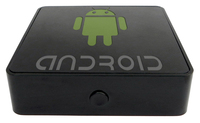
El dispositivo en cuestión es una especie de reproductor multimedia que se llamará Android Hub, y gracias a él Google quiere dar un paso más allá en el entretenimiento del hogar.
Poco se sabe por ahora, sólo que permitirá la reproducción multimedia mediante streaming, que se han enviado ya algunos de estos dispositivos a sus empleados para que empiecen a probarlos, será de la propia marca de Google y se llamará Android Hub. De esto deducimos además que, evidentemente, llevará Android. A partir de aquí son todo especulaciones.
Recordemos que Google ya cuenta con un sistema de entretenimiento multimedia, Google TV, por lo que este lanzamiento llama la atención bastante, ya que iría a cubrir algo que ya tiene en sus manos, y que además ahora está en alza desde que en el CES 2012 se presentasen una gran cantidad de televisiones y reproductores de diferentes marcas con este sistema.
Sin embargo todavía quedan cosas por hacer aquí, y se puede ver el Android Hub como una evolución de Google TV, ya que quizás no haya sido del todo bien planteado desde el principio. Google TV plantea llevar Android a las televisiones, ya sea integrado directamente en estas o en un reproductor multimedia externo como puede ser el Logitech Revue, que hasta ahora junto con los Bluray de Sony eran los únicos que nos permitían hacer esto. Una de las mayores virtudes de Google TV puede ser a su vez uno de sus mayores problemas, y es que cuando decimos que llevamos Android a una televisión, es exactamente eso lo que hacemos.
El problema aquí es que Android no está preparado del todo para eso, y aunque el Market cada vez tenga más aplicaciones adaptadas a televisiones, algo falla. Concretamente que se pierde la auténtica esencia de lo que más requiere el entretenimiento multimedia del hogar: sencillez. Reproducir una película almacenada en una habitación en la televisión del salón mediante Google TV puede llevar a convertirse en un auténtico suplicio, y no exagero. Tenemos diferentes opciones como buscarnos la vida con alguna buena aplicación, tener mucha suerte y confiar en que el DLNA esté de buen humor ese día y nos permita hacerlo por streaming con la pobres opciones que hay para esto o copiarlo a un disco duro o USB, llevarlo físicamente y confiar en que el formato sea compatible.
Y este es el verdadero problema de Google TV, que no es sencillo de usar para las cosas que realmente merecen la pena. Quiero que cuando un amigo venga a mi casa y nos apatezca ver una película, serie o escuchar un disco, pueda encender el aparato y darle a reproducir, nadie quiere tener que copiar un archivo de 10GB a un disco duro, llevarlo al salón y conectar un cable USB. Eso ya no se lleva, y de hecho no es necesario, porque hay opciones para hacerlo bien.
Esta necesidad es precisamente la que debería cubrir Android Hub, la de facilitar la vida al usuario con un método de entretenimiento avanzado, que haga las cosas y las haga bien. Es precisamente eso lo que demanda hoy en día el usuario de multimedia del hogar. Android Hub permitiría hacer streaming de cualquier contenido, de una forma sencilla y fácil, y lo lógico sería además poder conectar cualquier dispositivo Android a la red, y ver por ejemplo las fotografías de nuestro móvil en la televisión, otra cosa que aunque parezca mentira es también una aventura con Google TV.
Yo desde luego tengo muchísimas ganas de que Android Hub llegue al mercado, y estoy seguro que si lo hacen bien puede ser una auténtica maravilla de aparato, ¿qué os parece a vosotros? ¿Qué esperáis de este aparato?
Seguramente también te interesará...
- Las aplicaciones Android llegarán a cualquier TV gracias a Myriad Alien Vue
- Android y la Seguridad: Google responde con Bouncer
- 250 millones de Androides, 700k más al día y 11.000 millones de descargas del market
- Reproduce medios locales y online desde tu Android en tu TV o PC con ZappoTV
- Sincroniza tus carpetas en casi cualquier nube con FolderSync
- La salud y la importancia de la Scene de desarrolladores Android
- Google presenta la completa guía de diseño Android para Ice Cream Sandwich
- Las cosas que no os hemos contado del CES 2012, hasta ahora
Analiza la potencia de tu Android de doble núcleo con la actualización de Quadrant Standart Edition y AnTuTu Benchmark
Wed, 15 Feb 2012 00:53:53 PST
Muchos de vosotros conoceréis los tests Quadrant: una medida para comparar la potencia y rendimiento de diferentes terminales. En total se realizan unos cuantos test que miden la CPU, el I/O del movil y el rendimiento de los gráficos tanto 2D como 3D. Pero hasta ahora, el test más famoso de todos, Quadrant, no se [...]
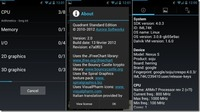
Muchos de vosotros conoceréis los tests Quadrant: una medida para comparar la potencia y rendimiento de diferentes terminales. En total se realizan unos cuantos test que miden la CPU, el I/O del movil y el rendimiento de los gráficos tanto 2D como 3D. Pero hasta ahora, el test más famoso de todos, Quadrant, no se podía utilizar en los terminales de doble procesador. ¡Descubre con esta nueva actualización, cual es tu puntuación!
Quadrant Standart Edition
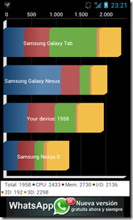Como ya hemos dicho, el test Quadrant hace un análisis completo de diferentes aspectos de nuestro teléfono. Pero hasta hoy, era completamente inútil esta aplicación ya que no servía en los terminales de doble núcleo, y por tanto daba malísimos resultados en los Samsung Galaxy S2 o similares de turno. Por suerte, Aurora Softworks era consciente de ello y unos cuantos meses más tarde han sacado la versión 2.0 con:
-
Soporte Android Ice Cream Sandwich (que va bastante regular)
-
Soporte procesadores multi-núcleo (doble y quad)
- Mejoras globales de la interfaz de la aplicación
- Corrección de un problema concreto para las GPU PowerVR SGX540
- Traducciones varias.
En definitiva, que podemos volver a hacer las típicas pruebas de toda la vida, ahora en los teléfonos más nuevos y potentes del mercado. El único punto que no me acaba de convencer es el rendimiento que tiene el test en ICS, que me parece excesivamente malo para mi terminal. En cualquier caso, para ello hay diferentes alternativas de tests como el que os digo a continuación.
AnTuTu Benchmark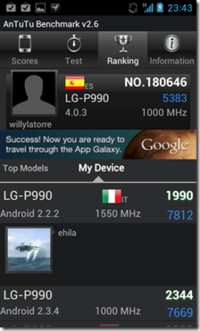
AnTuTu Benchmark es otra aplicación para realizar este tipo de tests en nuestro teléfono. En concreto nos permitirá analizar
- Rendimiento de la memoria
- Rendimiento de CPU Integer
- Redimiento de CPU Floating point
- Rendimiento de gráficos 2D y 3D
- Velocidad de lectura/escritura de la SD
- I/O de bases de datos
Y por descontado, luego lo comparará con su gran base de datos de otros teléfonos similares y globales. De esta manera podemos hacernos una idea si nuestro teléfono está bien optimizado, qué tal funciona y cuán bueno es comparado con el resto. Por ejemplo, si os fijáis en la captura de la derecha, veréis que he realizado el test con un Optimus 2X con Android 4.0.3 a 1000 Mhz: bastante peor que el mismo teléfono con Android 2.2.2 overclockeado a 1,55 GHz o el otro con Android 2.3.4 sin overclockear.
Esta aplicación lleva ahora ya un cierto tiempo en el mercado, ha sido descargado cerca de un millón de veces y sigue subiendo de manera espectacular. Vale la pena probarlo.
Como realizar estos tests solos no tiene ninguna gracia, os propongo que todos los que queráis participar, realicéis ambos tests y anotéis vuestra puntuación en esta hoja de excel. Así será bastante más divertido ;)
PD: Ahora he overclockeado mi Optimus2X a 1,3 Ghz + ICS y los resultados son bastante mejores
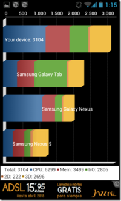
Seguramente también te interesará...
- Mide la potencia de tu Android y consigue más
- Z-DeviceTest – Análisis completo de tu teléfono
- Comparte de una forma distinta tus fotografías con Pudding.to
- Bloquea el acceso a las aplicaciones de tu móvil con App Lock
- Apps Chorras y Rumores de la Semana [#Yseguimosconelfrío...]
- Consigue un Taxi al momento con tu Android
- Automatiza tus estados en las redes sociales con Seesmic Ping
- Tutorial para dejar tu android como el primer día
VPlayer, posiblemente uno de los mejores reproductores de vídeos para Android
Tue, 14 Feb 2012 11:07:27 PST
Una de las cosas que se suele echar de menos nada más encender nuestro flamante móvil Android es un reproductor multimedia en condiciones. Los que suelen venir de serie suelen estar bien, pero se quedan cortos en opciones. Hoy vamos a ver uno de los mejores reproductores que podemos encontrarnos para reproducir cualquier cosa de [...]
Una de las cosas que se suele echar de menos nada más encender nuestro flamante móvil Android es un reproductor multimedia en condiciones. Los que suelen venir de serie suelen estar bien, pero se quedan cortos en opciones.
Hoy vamos a ver uno de los mejores reproductores que podemos encontrarnos para reproducir cualquier cosa de una manera espectacular en nuestros androides, se llama VPlayer y realmente merece la pena si eres una persona que suele ver series y demás en el móvil.
Es un reproductor que recientemente se ha actualizado añadiendo interesantes características.
Entre ellas podemos destacar la aceleración por hardware permitiéndonos reproducir vídeo en HD de manera realmente fluida en los terminales de alta gama.
Los usuarios que tengan ICS disfrutarán de una mejor aceleración ya que el propio sistema ya viene preparado para ello.
Los desarrolladores prometen que gasta menos batería que los reproductores que realizan la aceleración por software, cosa que se agradece si somos de ver vídeos en nuestros dispositivos.
Soporta una gran cantidad de formatos entre los que se incluyen: AVI, MOV, MKV, FLV, AVI, 3GP, 3G2, ASF, WMV, MP4, M4V, TP, TS, MTP yM2T
También tiene soporte para subtítulos y varios canales de audio, lo que lo hacen un reproductor de lo más completo.
La pega es que para disfrutar del máximo potencial de esta aplicación deberemos tener un móvil de alta gama y actualizado a ICS (a ser posible). Esto no quiere decir que no nos funcione en el resto de terminales, pero si que se nota si disponemos de esos dos requisitos.
La aplicación es gratuita durante 7 días, tras los cuales si nos ha gustado y queremos seguir usándolo deberemos comprar el desbloqueador por 1.95€, por lo que os recomiendo que le deis una prueba ya que es un reproductor realmente bueno.
En definitiva, si te encanta ver vídeos, series o películas en tu móvil es una aplicación que tienes que probar ya que seguramente te va a encantar.
La podéis encontrar en el Market.
¿Qué os parece este reproductor? ¿Cual usáis vosotros?
Seguramente también te interesará...
- Reproduce medios locales y online desde tu Android en tu TV o PC con ZappoTV
- DoubleTwist VS PowerAMP: Duelo de reproductores musicales.
- Beta oficial de VLC para Android
- Aplicaciones Android imprescindibles que no necesitan conectarse a internet
- VLC Share, comparte tus videos y musica en tu red
- El sistema de entretenimiento definitivo de Google: Android Hub
- AntiMap: el kit de herramientas que monitoriza tus movimientos gráficamente
- Vimeo estrena aplicación para Android
Borra partes no deseadas de las fotografías con Remove by Scalado
Tue, 14 Feb 2012 07:27:03 PST
¿Cuantas veces nos habrá pasado que al sacar una foto, se nos ha cruzado ese espontáneo justo en el momento de pulsar el botón? A mi personalmente, bastantes. Con Remove by Scalado, podemos tener la solución a un par de pulsaciones. Remove, es una aplicación, que nos permitirá eliminar cualquier objeto en movimiento, que se [...]
¿Cuantas veces nos habrá pasado que al sacar una foto, se nos ha cruzado ese espontáneo justo en el momento de pulsar el botón? A mi personalmente, bastantes.
Con Remove by Scalado, podemos tener la solución a un par de pulsaciones.
Remove, es una aplicación, que nos permitirá eliminar cualquier objeto en movimiento, que se encuentre en la fotografía y no deseemos que aparezca en ella, con un par de pulsaciones.
Aún no sabemos muy bien el funcionamiento de la aplicación, pero se supone que el software “captura” varias imágenes antes de que el usuario pulse el botón del obturador, permitiendo así al software, eliminar cualquier objeto en movimiento que aparezca en los anteriores frames.
Scalado mostrará una demo preliminar en el Mobile World Congress, entre el 27 de febrero y 1 de marzo, aunque no esperes ver esta aplicación en el Android Market a corto plazo.
Aunque muchos de vosotros nunca hayáis oído hablar de Scalado antes, es uno de los principales proveedores de tecnología de imagen móvil con software, cargado en más de 1 billón de dispositivos móviles a nivel mundial.
Esto significa que los próximos teléfonos Android, podrían venir con Remove ya integrado en la aplicación de cámara, al igual que HTC ya ha incorporado HDR Scalado, la ráfaga panorámica, y las tecnologías de rebobinado de la cámara.
Aún no estamos seguros de que ésta tecnología vaya a ser incorporada en todos los teléfonos Android de serie o en alguno que sea presentado en el Mobile World Congress de Febrero, pero si confiamos en que podamos disfrutar de ella, antes de finales de año.
Os dejamos con un vídeo y una galería de la aplicación, deseando que os hayamos abierto un poco el apetito de saber más sobre ella.
Nos despedimos por ahora, pero estamos seguros, que no es la última vez que hablamos sobre esta magnífica aplicación en El Androide Libre.

Fuente: Android and Me
Seguramente también te interesará...
- Escanea y comparte tus documentos gracias a Handy Scanner
- Camera MX: La suite fotográfica definitiva para tu Android
- Dispara más rápido que nunca con EZ Cam widget
- Convierte tu Android en un reloj de mesa con Clock Saver
- Las mejores ilusiones ópticas en tu Android
- Efectos vintage, retro y lomo para tus fotografías con Man With Camera
- Fotografía en Android: Secuencias de fotografías y cámaras espía
- Winamp para Android se actualiza con sincronización inalámbrica y ecualizador
Primera imagen de un Android con Intel y Motorola
Tue, 14 Feb 2012 01:27:51 PST
Ya nos avisó Intel que pondría todo su esfuerzo, capital e interés en Android, y Google también acercó posturas. También sabíamos que en el MWC ya veríamos algo concreto y no sólo el chip Medfield que tan buenas pero controvertidas críticas ha recibido. Lo que no esperábamos, o al menos yo, es que fuera Motorola la primera [...]
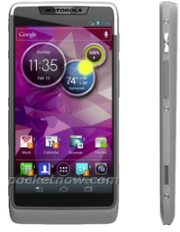Ya nos avisó Intel que pondría todo su esfuerzo, capital e interés en Android, y Google también acercó posturas. También sabíamos que en el MWC ya veríamos algo concreto y no sólo el chip Medfield que tan buenas pero controvertidas críticas ha recibido. Lo que no esperábamos, o al menos yo, es que fuera Motorola la primera novia de Intel, y con la sorpresa en el cuerpo aún, vemos la primera filtración de un dispositivo de Motorola con Ice Cream sandwich y gobernado por un chip de Intel. A priori y sobre el papel, toda una máquina de ingeniería.
Aparte de ser un Motorola, tener Android 4.0 Ice Cream sandwich con una interfaz personalizada no muy agresiva, poco más podemos decir. De aspecto delgado y gran pantalla, parece que tendrá un botón dedicado a la cámara y que su estructura como el Razr parece robusta (al menos la tornillería y acabado gris metálico lo hacen parecer)
Los botones de Retorno, Home y Menú serán táctiles y lo que apunta la fuente aparte de esta imagen, es que la cámara será un punto clave de este terminal, y port supuesto todo el ecosistema de juegos, apps y potencia que pueda desarrollar el chip Medfield de Intel. Sin duda estamos ante el que será uno de los grandes terminales de 2012, bien porque se lo merezca o porque Intel nos lo meta por los ojos (se la juegan al 100% en el mercado de la telefonia, donde lo tenían todo perdido) Habrá que ver a cual de las dos responde. Boom o Bluff
Fuente: Pocketnow
Seguramente también te interesará...
- Medfield, el caballo de batalla de Intel: El todo por el todo con android
- Todos los detalles sobre la Alianza de Intel y Android
- El momento más importante para Google y Android: desarrollar su propio Hardware
- El retraso de las actualizaciones: Motorola habla al respecto
- Estos serán (probablemente) los mejores smartphones Android de 2012
- Las patentes y el progreso, ¿inversión de futuro?
- Android: muchos modelos pero ¿Y la variedad?
- Las cosas que no os hemos contado del CES 2012, hasta ahora
20+2 Trucos para aprovechar tu Android
Mon, 13 Feb 2012 11:02:36 PST
Como todas las cosas, y más de este tipo, es decir, electrónica, dispositivos, gadgets, etc., necesitamos un tiempo de adaptación y aprendizaje. Todos hemos pasado por esto, y muchos están ahora en ese proceso o lo estarán dentro de poco, así que en esta ocasión aprovecharemos para dejaros una pequeña lista de trucos para que [...]
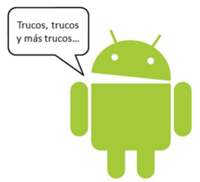Como todas las cosas, y más de este tipo, es decir, electrónica, dispositivos, gadgets, etc., necesitamos un tiempo de adaptación y aprendizaje. Todos hemos pasado por esto, y muchos están ahora en ese proceso o lo estarán dentro de poco, así que en esta ocasión aprovecharemos para dejaros una pequeña lista de trucos para que podáis aprovechar vuestro nuevo (o no) teléfono Android, y que no es que sea trucos de esos complicados o “solo para expertos”, sino que son pequeños consejos y posibilidades que por una u otra razón no se nos ocurre o no dedicamos el tiempo a buscarlo. Muchas puede que ya las conozcáis, o incluso todas, pero seguro que a mucha gente que empieza ahora en Android les puede venir muy bien.
Básicos
1. Acceso a tus contactos
Sí, algo obvio y que se ha comentado muchas veces, pero nunca está de más repetir. Saber que para aprovechar 100% Android hay que tener una cuenta de Gmail, y que al introducir nuestros datos, automáticamente se realizará una copia de nuestros contactos en nuestra cuenta, a los cuales podremos acceder desde cualquier ordenador, así no perderemos nunca más nuestros números y, además, podremos añadir o modificar los contactos desde el PC y automáticamente se añadirán los cambios a nuestro ordenador sin necesidad de conectar ningún cable.
2. Opciones Wi-Fi
Si queremos conectarnos a una red Wi-Fi “normal”, basta con abrir las conexiones, buscar la red, poner la clave si procede y listo. Pero hay otras opciones más específicas que se encuentran pulsando la tecla menú y accediendo a Ajustes Avanzados. Desde aquí podemos gestionar la MAC o establecer una IP estática en caso de ser necesario, y podremos controlar el método de suspensión de la conexión Wi-Fi para que no se desconecte nunca, o que lo haga al apagarse la pantalla, por ejemplo; una duda más que comentada en los foros y que tiene una fácil solución.
3. Control consumo bateria
Desde las últimas versiones de Android, la monitorización del consumo de batería ha mejorado bastante, y ahora al acceder a los detalles vemos un pequeño gráfico que no muestra cómo ha ido disminuyendo la carga de batería desde la última vez que fue cargada completamente, y nos indica las hora de uso. Pero si pulsamos sobre ese gráfico, nos lo mostrará más grande y con algo más de información como cuándo estaba el Wi-Fi activo, los momentos de carga, la pantalla encendida, etc. Así podremos ver si hay alguna bajada drástica de batería, ver a que puede deberse.
4. Visualizar la fecha
Muchos terminales que viene con capas del fabricante nos traen un bonito widget con la hora y la fecha, pero no siempre disponemos de esos terminales o no siempre tendremos un widget a la vista. Si por lo que sea necesitamos saber la fecha y no queremos ir a la pantalla inicial a verlo, siempre podemos pulsar sobre la barra de notificaciones y, sin necesidad de abrirla (tan solo manteniendo pulsado) ya nos mostrará la fecha, junto a la hora que siempre nos muestra.
5. Opciones de la cámara
La cámara es otra de la aplicaciones que mucha gente usa, pero pocos la toquetean. Además de pulsar para hacer la foto, tenemos el botón de opciones que nos permitirá controlar ciertos parámetros como la ISO, en Balance de Blancos o elegir la exposición, por ejemplo. Así que ya sabéis, vuestra cámara móvil tiene más opciones de las que se ven a simple vista.
6. Cambiar aplicaciones por defecto
Navegadores, Launchers, reproductores de sonido…Hay infinidad de aplicaciones que podemos usar y muchas veces al tener varias, queremos usar siempre una por defecto y dejar las otras para casos excepcionales. Para ello es tan fácil como al abrir, por ejemplo, un link a Internet, si tenemos 2 navegadores nos preguntará cual queremos usar. Abajo de esa lista hay una casilla de verificación que nos permite realizar siempre la acción con el navegador (o aplicación) que le digamos en ese momento, pero si luego nos arrepentimos y queremos cambiar, es tan sencillo como ir a la lista de aplicaciones y dentro de sus opciones borrar los valores predeterminados. De esta manera, nos preguntará nuevamente qué aplicación queremos usar y podremos elegir otra.
7. Silenciar una llamada
Algo tan útil en muchas ocasiones. Para silenciar una llamada que no queremos responder, pero tampoco queremos rechazar, es tan simple como pulsar la tecla de volumen arriba o abajo. De esta forma silenciaremos la llamada, y en caso de que tengamos el móvil en vibración, dejará de vibrar, así podemos silenciar esa llamada incluso sin sacar el teléfono del bolsillo. Algo realmente cómodo.
8. Cambiar el tipo de visualización del navegador (Agente)
Las opciones de navegador también son varias. Entre ellas está la de poder elegir el modo de visualización. Muchos son los que no quieren ver las páginas en formato móvil y para ello basta entrar a las opciones y elegir el tipo de Agente que se quiere usar: Escritorio, Android, iPhone (sí, sale esa opción)… La ubicación de esta característica varia dependiendo del navegador.
9. Modificar el zoom por defecto
Igual que lo anterior, está dentro de las opciones de cada navegador, y nos permite abrir siempre las páginas con un determinado Zoom, así siempre tendremos una visión completa de la página o, por el contrario, una visión más cercana.
10. Cambiar rápidamente el teclado
Si tenemos y usamos varios teclados, no es necesario ir a las opciones de los ajustes y cambiar desde ahí el teclado por defecto. Es mucho más sencillo, basta mantener pulsado unos segundos en cualquier cuadro de texto. Nos aparecerá un menú donde podemos elegir el método de introducción y ahí seleccionamos el teclado que queramos.
En ICS esto cambia, ya que en este caso nos aparece un icono en la barra de notificaciones desde el cual accedemos a las opciones de cambio de teclado.
11. Ocultar el teclado
Muchos teclados tienen la opción de que al deslizarlos hacia abajo de ocultan. Esto viene bien para rellenar formularios por ejemplo, ya que en muchas ocasiones el teclado se superpone a los campos de texto. Aunque por norma general, también podemos ocultarlo pulsando la tecla atrás del teléfono. Esto no provocará que salgamos del navegador ni de la aplicación en cuestión, simplemente cierra el teclado, así podemos pulsar sobre el siguiente cuadro de texto y automáticamente se abrirá nuevamente.
12. Opciones de búsqueda interna
La barra de búsqueda de Google es en ocasiones muy útil, pero no sólo podemos buscar en Internet. Si accedemos a las opciones podemos hacer que busque en nuestros contactos, nuestras aplicaciones, mensajes, twits, aplicaciones como Evernote, etc. Lo que nos ahorra mucho tiempo ya que lo tenemos todo en un mismo lugar.
13. Auto-completar búsquedas
Si hemos realizado alguna búsqueda, siempre nos queda en el historial. Pero a veces queremos buscar algo más. Por ejemplo hemos buscado “bicicleta” y ahora queremos buscar “bicicleta de montaña”. Pues cuando veamos la sugerencia de búsqueda, en lugar de pulsar sobre el nombre, lo hacemos sobre la flecha de la derecha y nos añadirá la palabra sin iniciar la búsqueda, así podemos seguir escribiendo.
14. Eliminar elementos del historial de búsqueda
Más o menos como antes, pero ahora lo que tenemos que hacer es pulsar sobre la X que aparece a la derecha de la palabra. Así eliminamos esa palabra del historial y ya no aparecerá más (hasta que la volvamos a buscar). Cada uno que le de el uso que crea conveniente…
15. Búsqueda por voz
Otra opción muy útil. Además de poder hacerlo usando la barra de búsqueda, hay un pequeño truco que es mantener el botón de búsqueda (lupa) pulsado unos segundos hasta que se abra la búsqueda por voz.
Especial ICS
16. Capturas de pantalla
Por fin han activado las capturas de pantalla de serie, y para ello es tan simple como pulsar a la vez el botón de encendido + volumen abajo. Al principio cuesta, pero luego es realmente fácil. Las capturas se guardan en una carpeta especial llamada Screenshots.
17. Uso de datos
Otra gran opción que me parece muy útil. Si abrimos los ajustes encontramos una opción llamada Uso de datos, que nos muestra una gráfica de lo que hemos consumido. Lo bueno es que podemos ponerle un límite para que nos avise cuando nos acerquemos y si lo deseamos, bloquear la conexión pasado ese límite, así nos ahorramos sustos en la factura si no tenemos tarifa plana. Además nos muestra cuanto ha consumida cada aplicación y podemos limitar el uso de esa aplicación por separado. Algo muy, muy útil.
18. Crear carpetas
Crear carpetas es de lo más sencillo. Basta arrastrar un acceso directo sobre otro y listo, carpeta creada. Si queremos cambiar el nombre la abrimos y pulsamos sobre él, y nos dará la posibilidad de modificarlo. Si sacamos todos los accesos directos, cuando solo quede uno desaparecerá automáticamente la carpeta.
19. Modificar el tamaño de los widgets
En ICS podemos modificar el tamaño de los Widgets. Para ello, una vez añadido el que queramos, lo mantenemos pulsado y cuando podamos moverlo lo soltamos de nuevo. Veremos que aparecen unos puntos en los bordes y son los que nos permiten redimensionar dicho widget.
20. Habilitar NFC
Para activar esta característica debemos abrir las opciones y, en conexiones inalambricas pulsar sobre Más… Ahí veremos la casilla que nos permite activar o desactivar NFC, y su uso es automático. Al acercarnos a otro dispositivo NFC realizará la acción correspondiente sin que tengamos que hacer absolutamente nada.
Y como extra:
21. Resolver Sudokus
Sí amigos, podemos resolver Sudokus con nuestro Android. Para ello debemos descargar la aplicación Google Goggles y hacer una foto al Sudoku en cuestión. Luego veremos como en pocos segundos lo tendremos resuelto.
22. Huevo de pascua
Y esta es otra característica “oculta” de Android, y el resultado varia dependiendo de la versión. Para ello debemos ir a Ajustes>Acerca de… y pulsar repetidamente sobre “Versión de Android”. Cada uno que descubra que pasa en ese momento.
Y esto es todo por hoy, esperamos que os sean de utilidad estos pequeños trucos y, como no, os invitamos a dejar algunos más en lo comentarios.
Via: Android appstorm
Seguramente también te interesará...
- 15 consejos y trucos para prolongar la batería de tu Android
- 10 Trucos para alargar la batería de un Android
- Controla el color del LED de tu teléfono con Light Flow
- Tutorial para dejar tu android como el primer día
- Issue 2207 y otros problemas de Android resueltos
- ¿Juegas? ¿no juegas? ¡Android es lo tuyo!
- Compartir internet (Tethering) sin ROOT, indetectable para las operadoras, de la mano de Koush
- Las mejores pizarras para Android
Nueva Samsung Galaxy Tab 2, el teléfono en la tablet
Mon, 13 Feb 2012 06:15:18 PST
Hay tablets, hay smartphones, hay smartphones que parecen casi tablets llegando a los 5,3″ de pantalla, y hay tablets pequeñas de 7 pulgadas, pero esas tablets de 7 pulgadas, pese a su potabilidad y gran comodidad de tamaño, no llevan teléfono salvo una, la primera tablet android, la Samsung Galaxy tab, ahora, renovada y estrenada, la Samsung [...]
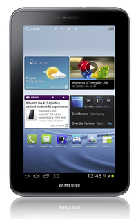Hay tablets, hay smartphones, hay smartphones que parecen casi tablets llegando a los 5,3″ de pantalla, y hay tablets pequeñas de 7 pulgadas, pero esas tablets de 7 pulgadas, pese a su potabilidad y gran comodidad de tamaño, no llevan teléfono salvo una, la primera tablet android, la Samsung Galaxy tab, ahora, renovada y estrenada, la Samsung Galaxy Tab 2 (P3100), más de lo mismo, mejorado, pero incidiendo en el teléfono incorporado como su factor diferenciador. Se acaba de presentar en el European Forum 2012 y así es:
Muchos pensarán ¿para qué un teléfono en una tablet? Mi respuesta es: Eso es que no lo habéis probado. Obviamente no es para hablar mucho, pero con 7″ pulgadas y teléfono podemos prescindir perfectamente de nuestro smartphone y llevar sólo esta tab, hablando por manos libres, una sensación poco habitual pero a la que te acostumbras, máxime si no hablas mucho por teléfono y te gusta tener una gran pantalla. Sin más preámbulos os detallo las características técnicas que se conocen:
-
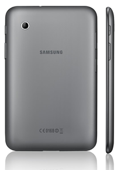Pantalla TFT de 7 pulgadas (1024×600)
- Procesador Dual Core de 1 ghz – 1 Gb de RAM
- Android 4.0 Ice Cream Sandwich con interfaz Touchwiz
- Memoria interna de 8, 16 y 32 GB (según modelo)
- Batería de 4000Mah
- Conexión 3G HSPA+ de hasta 21 Mbps
- Cámara trasera de 3 mpx y frontal VGA
- Wifi, GPS, Bluetooth 3.0, sensores, slot para tarjetas microsd
- 10,5 mm de grosor
En cuanto al precio de esta tablet muy enfocada en lo que quiere y busca en su público, rondaría los 339€ versión Wifi y los 449€ para la versión 3G . Su llegada a los mercados Europeos se espera para principios de Marzo, empezando por Reino Unido.
.
Personalmente me gusta, aunque se que como todos los aparatos electrónicos, o casi todos, no encajará con el perfil de uso de todo el mundo, pero para mi, todo aquel gadget que de sentido a un tipo de uso, por raro que pueda parecer, es válido y máxime si hablamos de Samsung y de la revisión y mejora de un producto que ya fue de éxito. Y aunque el precio cuando salga será el normal o “adecuado” para este tipo de tablets (no olvidemos el teléfono) seguramente a finales de año, por las Navidades de 2012 será casi un regalo.
-
¿Y a ti, te gusta?
-
Via: TNW
Seguramente también te interesará...
- No hemos encontrado nada relacionado, debe de ser contenido fresco :D
FTL Launcher, un launcher ligero y ultrarápido
Mon, 13 Feb 2012 02:01:16 PST
Una de las cualidades más destacables de Android es su capacidad de personalización y sin duda, está muy bien. Pero para mí, no es ni de lejos la mejor. Hay otra característica propia de Android (que además solamente existe en Android frente a sus competidores) que es algo mucho más potente, más útil y más [...]
Una de las cualidades más destacables de Android es su capacidad de personalización y sin duda, está muy bien. Pero para mí, no es ni de lejos la mejor. Hay otra característica propia de Android (que además solamente existe en Android frente a sus competidores) que es algo mucho más potente, más útil y más importante, desde el punto de vista económico (y ecológico incluso): las mejoras de rendimiento con la instalación de diferentes versiones, aunque no sean oficiales.
Viendo el título del artículo y mi primer párrafo pensaréis (no sin cierto tino) que estoy un poco idiota, pero tiene cierto sentido, así que mejor lo explico. Al instalar ROM personalizadas en nuestros móviles podemos alargar progresivamente su vida útil, añadiendo ciertas características o mejorando el rendimiento al utilizar ciertas otras, y a colacíón de lo anterior viene lo que hoy os presentamos: FTL Launcher.
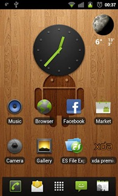¿Qué es FTL Launcher?
Pues creo que para la primera definición me quedo con la siguiente frase extraída de la descripción de la aplicación que da el propio creador en el Market:
“Make no mistake, this is the fastest launcher you’ll ever run. Small, light, configurable. The Gingerbread launcher as it should have been.”
“No te confundas, éste es el launcher más rápido que ejecutarás nunca. Pequeño, ligero, personalizable. El launcher de Gingerbread como debería haber sido”
Y básicamente esas son las características distintivas de este launcher sobre los demás. Es pequeño, ligero y personalizable, muy simple, y un alivio para la carga de nuestro procesador.
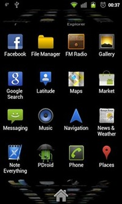¿De verdad es tan rápido?
Seguramente sea un poco más rápido de lo que estáis pensando. La respuesta del launcher, del drawer de aplicaciones, de los widgetsm en suma, de todo, es espectacular, es muy rápido. No tiene impresionantes efectos, no es lo que os vais a encontrar aquí, pero el rendimiento será el mejor, con diferencia, de todos los que os vais a encontrar.
El diseño es sobrio, simple, pero no rácano, y muy agradable a la vista. No es nada invasivo con el diseño por defecto de Android, y el diseño y desplazamiento del drawer son deliciosamente bonitos y eficaces.
Algún “pero” tendrá…
Pues efectivamente, lo tiene. Es un launcher potente, ligero y personalizable, PERO no es gratis, de hecho ni siquiera es barato (para lo que suele costar una aplicación en Android) pues cuesta 2 euros. Además, la otra pega (aunque menor, gracias a que los fabricantes han empezado a ser un poco más serios), es que es imprescindible tener Gingerbread en nuestro teléfono para que este launcher funcione, y además, que la pantalla sea de 800×480 (aunque en esto último ya están trabajando).
Aún así, tenemos a nuestra disposición una versión gratuita, que no nos permite personalizar la mayoría de las cosas, pero que es perfecta para comprobar hasta qué punto el rendimiento del launcher es verdad. Si no sois muy de cambiar cosas, ni siquiera tendréis que haceros con la versión de pago, porque la gratuita os resultará más que suficiente.
¿Mi recomendación? Que probéis la versión gratuita, y si os enamora tanto como a mí, que paguéis los dos euros que cuesta y os hagáis con él por siempre jamás.
Descargar la versión gratuita del Market:
Descargar la versión de pago del Market:
Seguramente también te interesará...
- Personaliza completamente tu launcher con SS Launcher
- Hi Launcher, una Experiencia inesperada para tu teléfono
- Un novedoso Launcher Vertical con multitud de temas: Crome Launcher
- Una interfaz gráfica muy prometedora para Android: ROU UI y ROU Launcher
- Relojes originales para Android
- Launcher Wall, interactua con tu fondo de pantalla
- Borra partes no deseadas de las fotografías con Remove by Scalado
- Android 5.0 Jelly Bean: No vais a estar conformes sea lo que sea
Linpus consigue portar Android 4.0 Ice Cream Sandwich a nuestros PC
Sun, 12 Feb 2012 11:46:17 PST
Android es muy versátil. Hemos visto multitud de dispositivos corriendo Android. Dispositivos que en muchos casos no tienen nada que ver con un móvil o una tablet, sin embargo, gracias a su versatibilidad es posible que se alojen en estos dispositivos. Dispositivos como relojes o ordenadores. Sin embargo, la interfaz no se adapta siempre para [...]
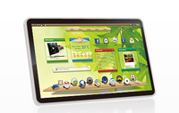
Android es muy versátil. Hemos visto multitud de dispositivos corriendo Android. Dispositivos que en muchos casos no tienen nada que ver con un móvil o una tablet, sin embargo, gracias a su versatibilidad es posible que se alojen en estos dispositivos. Dispositivos como relojes o ordenadores. Sin embargo, la interfaz no se adapta siempre para estos dispositivos y los fabricantes tienen que recurrir a modificarla.
Un ejemplo claro es en los PC, donde la interfaz gráfica de android no es acorde con las necesidades de un portátil. Sin embargo, android es open source y cualquiera puede modificarlo por lo que quien sabe lo que pueden llegar a hacer con este sistema en estos dispositivos.
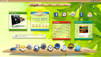
Pues la gente de Linpus se ha propuesto hacerlo y ha portado Ice Cream Sandwich a netbooks y portátiles. De igual forma han lanzado una versión con una interfaz adaptada para tablets (como si la que tiene Android para tablets fuese mala.. -.-). Todo esto lo han hecho con una interfaz renovada que a priori debería de ser más adecuada a un portátil.
La principal característica de este port realizado por Linpus es que está diseñado principalmente para arquitecturas x86 y para los medios de un portatil. Por ello que quieran potenciar el rendimiento de este port en chips Medfield, ya que esta gama de chips x86 se posiciona como “el estandar” de los chips x86 en Android.
Sinceramente creo que este proyecto tiene muy poco futuro. Está bien poder correr el sistema operativo Android en un ordenador pero no tiene ninguna utilidad. Todas las aplicaciones que hay para Android están adaptadas para las interfaces de móviles y tablets y por mucho que hayan modificado la forma en la que interactuamos con nuestro PC, no podrán adaptar también las aplicaciones disponibles para Android a las necesidades de un PC. Android es un ecosistema en el que todo está ideado para funcionar conjuntamente (a pesar de la diversidad de dispositivos) y algo tan diferente como esto, es difícil que se integre con el resto del ecosistema.
De decantarse por este sistema, el uso de este sistema tendría que limitarse a lo que permite de serie, sin posibilidad de adaptarse a las necesidades del usuario mediante aplicaciones cuando este es uno de los puntos principales de cualquier sistema operativo hoy en día. Si no fuera así, muchas más personas usarían alguna distribución Linux en vez de Windows o Bada en vez de Android o iOS. No obstante, muy buen intento por parte de los chicos de Linpus, aunque como ya he dicho no confío en que tengan éxito.
Mas información : Web de Linpus
Seguramente también te interesará...
- Google Chrome para Android ya disponible
- Firefox 10 para android ya disponible y la 11 y 12 beta también
- Chollos Android de rebajas: Tablets y smartphones
- Las cosas que no os hemos contado del CES 2012, hasta ahora
- Asus presenta oficialmente una Transformer Prime HD y la Eee Pad MeMo
- Guía imprescindible para elegir la mejor tablet
- Como un iPad pero con android, made in Spain/China
- Los 4 mejores teclados gratuitos para tu tablet Android
Realiza llamadas gratis por VoIP con Vonage
Sun, 12 Feb 2012 07:27:37 PST
Una de las funciones principales de un móvil es comunicarnos, ya sea por SMS o llamadas, aunque por culpa de los smartphones ya no se limita solo a eso, o al menos no exactamente igual. Con la llegada de Whatsapp se han puesto de moda la mensajería instantánea pero aún somos muchos los que nos [...]
Una de las funciones principales de un móvil es comunicarnos, ya sea por SMS o llamadas, aunque por culpa de los smartphones ya no se limita solo a eso, o al menos no exactamente igual. Con la llegada de Whatsapp se han puesto de moda la mensajería instantánea pero aún somos muchos los que nos gusta llamar para ciertas cosas.
Sin embargo no hay muchos servicios de calidad que nos permita realizar llamadas gratis con nuestro smartphone mientras estamos con 3G. Fue cuando encontré Vonage, una aplicación que permite realizar llamadas VoIP con nuestro smartphone a cualquier otro usuario que use este servicio.
Con Vonage, como ya hemos dicho, podremos realizar llamadas a través de internet sin coste alguno a cualquier usuario que también use esta aplicación. Sin embargo, si queremos llamar a una persona que no cuenta con esta aplicación debemos de canjear crédito para poder llamar a ese contacto. En este caso se comportaría como Skype, necesitando de un crédito para poder llamar a números de teléfono.
También podremos enviar mensajes de texto mediante Vonage siguiendo la misma política. Para personas que lo usan, de forma gratuita y con personas que no lo usan necesita crédito. Este crédito se obtiene mediante el Android Market en paquetes de 5 dólares. Aquí en España, con el euro, nos costará el paquete más caro unos 7,5 €, disponiendo de 10 dólares para realizar llamadas. Este crédito se obtiene como si instalásemos una aplicación cualquiera.
Hablando de la estructura de la aplicación hay que decir que tiene una interfaz muy simple y que personalmente me gusta bastante, con unos colores grisaceos y anarajados que dotan de un aspecto bastante atractivo a esta aplicación. Por el contrario, la forma en la que interactuamos es muy simple y no aporta nada novedoso.
Una aplicación formidable que poco a poco puede situarse como un gran competidor de algunas aplicaciones similares a esta como Skype o Viber que también realizan esta función. Si queréis probarla y comenzar a usarla con vuestros amigos, que sepáis que está disponible en el Android Market de forma gratuita. Y por cierto, si tenéis ese típico amigo con un iPhone, no os preocupéis que también está disponible en la AppStore.
Seguramente también te interesará...
- Llamadas gratis en Android gracias al VoIP con Tango, Viber y Skype
- Llamadas baratas e incluso gratuitas gracias al SIP en Android
- Viber para Android en beta ya disponible, ¡apúntate!
- Google Chrome para Android ya disponible
- Firefox 10 para android ya disponible y la 11 y 12 beta también
- Personaliza cada sonido y cada notificación con Rings Extended y Text Tone
- La alternativa gratuita a Spotify: Biit para Android
- Envía SMS gratis a quien quieras gracias a MJOYDROID
Apps Chorras y Rumores de la Semana [#Yseguimosconelfrío...]
Sat, 11 Feb 2012 09:48:23 PST
Hola a todos y todas l@s lectores de EAL, y bienvenidos, una vez más, a la sección semanal preferida por lectores de todo el mundo, a Aplicaciones Chorra y Rumores de la Semana, donde os traemos cada semana un par de jugosos rumores junto con un par de aplicaciones salidas de sitios que ni siquiera [...]
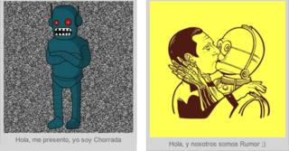
Hola a todos y todas l@s lectores de EAL, y bienvenidos, una vez más, a la sección semanal preferida por lectores de todo el mundo, a Aplicaciones Chorra y Rumores de la Semana, donde os traemos cada semana un par de jugosos rumores junto con un par de aplicaciones salidas de sitios que ni siquiera conoces…
Hoy traemos un par de rumores jugosos provenientes de HTC, ya que se han filtrado dos apetitosos terminales que seguro que darán mucho de que hablar próximamente. Además, os traemos las dos aplicaciones chorras que os harán reír un buen rato…
¿Te apuntas a nuestro plan? Sigue leyendo…
Rumores
Lo primero de todo son nuestros rumores, con los que algunos babean fácilmente…
Nuevo primer rumor es sobre el HTC Endeavor, un rumor que si MoDaCo (quien anuncia el rumor) acierta, daría mucho de que hablar, ya que sería el primer teléfono en tener un procesador quad-core (con permiso de la Transformer Prime, que es una Tablet). Sus características son un procesador NVIDIA Tegra 3, 1GB de RAM, una pantalla de 4,7 pulgadas con una resolución de 720p, y cámaras trasera y delantera de 8 y 1.3 megapíxeles, respectivamente. Habrá que esperar al MWC para mas noticias…
Fuente | AndroidCentral
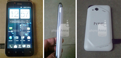
El teléfono que tenemos sobre estas líneas puede ser el rumoreado HTC Fireball, ya que el nombre que puede llevar este terminal no está todavía demasiado claro. Mirando las especificaciones de este HTC, nos encontramos con un procesador de doble núcleo a 1.2GHz, 1GB de memoria RAM, cámaras frontal (VGA) y trasera (8MP), una pantalla AMOLED y Beats Audio. En la fuente que tenéis a continuación podéis ver una galería con varias fotos del dispositivo, y el lanzamiento del dispositivo no está muy clara. Como en el rumor anterior, habrá que esperar al cercano MWC para nuevas noticias…
Fuente | Android and Me
Apps Chorras
Lo siguiente, como viene siendo habitual, son las Aplicaciones Chorra, las que nos sorprenden cada vez más…
La primera aplicación de hoy es Frases para ir a cagar… O_o
Gran cantidad de frases para decir de una manera más divertida que vamos a cagar.
Gratis y en el Android Market, ¿alguna pregunta más?
La segunda aplicación de hoy es Smoke A Bong…
Fuma marihuana virtual
Oferta promocional, sólo esta semana
Ahora puedes fumar marihuana en tu movil! Demuestra a tus amigos con iPhone una aplicación que nunca tendrán! Perfecta para las fiestas!
Basta con colocar el cogollo de marihuana en la pipa o bong, toca para que aparezca el mechero y sopla a través del micrófono coger humo y explulsarlo.
Esta aplicación es perfecta para compartir unas risas con tus amigos en el bar o el club.
Bueno, haz como que te colocas por solo 1.49€…
Y con esto terminamos por hoy. ¡Que paséis un buen fin de semana!
Seguramente también te interesará...
- Apps Chorras y Rumores de la Semana #OMGvuelvemecano
- Apps Chorras y Rumores de la Semana #Hoyconracióndoble
- Apps Chorras y rumores de la Semana [#definitivamenteestoesmalo]
- Apps Chorras y Rumores de la Semana [#Peroquefríoquehace...]
- Apps Chorras y Rumores de la Semana [#LaresureccióndeFileServer]
- Apps Chorras y Rumores de la Semana [#Dedondevoyadescargaryoahora?]
- Apps Chorras y Rumores de la Semana (#Depresiónpostvacacional)
- Apps Chorras y Rumores de la Semana [#2012seráunbuenaño]
Consigue un Taxi al momento con tu Android
Sat, 11 Feb 2012 01:16:53 PST
Hace un año y pico os resumimos unas cuantas aplicaciones que habían para pedir un taxi desde tu Android. Por descontado, el tiempo ha pasado y han salido unas cuantas nuevas aplicaciones que mejoran y mucho el panorama. Hoy os quiero presentar GooTaxi, myTaxi y Wannataxi, tres aplicaciones que van a conseguirnos un taxi en [...]
Hace un año y pico os resumimos unas cuantas aplicaciones que habían para pedir un taxi desde tu Android. Por descontado, el tiempo ha pasado y han salido unas cuantas nuevas aplicaciones que mejoran y mucho el panorama. Hoy os quiero presentar GooTaxi, myTaxi y Wannataxi, tres aplicaciones que van a conseguirnos un taxi en pocos minutos.
GooTaxi
GooTaxi es una aplicación multiplataforma que nos va a permitir conseguir un taxi con mucha rapidez. El procedimiento es bastante sencillo, abres la aplicación y seleccionas el lugar donde quieres pedir el taxi. Me ha gustado esta aplicación por diferentes motivos. Uno de ellos es el amplio número de ciudades en las que opera (10) y en las que lo hará (9). Pero ¿cómo funciona GooTaxi? ¿Cómo consigue enviarte un taxi al lugar donde te encuentras? ¿Magia? Pues no, es muy sencillo. GooTaxi está en contacto con las principales compañías de Taxi nacionales: Radio Teléfono Taxi (Madrid), Barna Taxi o Radio Taxi (Barcelona), Radio Central Taxis de Catalunya y muchas más que podéis encontrar aquí.
Como punto negativo, hay bastantes comentarios de gente que dice que no le ha acabado de funcionar la localización correctamente y han de confirmar su posición llamando. Por ello os recomiendo que probéis primero Wannataxi.
Finalmente, hay que decir que la aplicación es gratuita y está disponible de manera multiplataforma (iPhone, Android, BB, Windows Phone y Symbian).
MyTaxi
MyTaxi sigue la misma filosofía que la anterior. En un inicio era una aplicación alemana pero poco a poco se está expandiendo y ahora ha incluido Barcelona como uno de sus principales puntos de taxis. Así pues, os recomendaría más Wannataxi o GooTaxi si es para un uso dentro de España, pero definitivamente si os vais al extranjero llevaros MyTaxi con vosotros.
Actualmente opera en Alemania (la gran mayoría), Austria y Australia. Pronto lo hará también en Suiza, Inglaterra, Holanda y otros países europeos. Por lo demás, hay que decir que es la aplicación mejor diseñada y con más atractivo visual. ¡Además es completamente gratuita!
Wannataxi
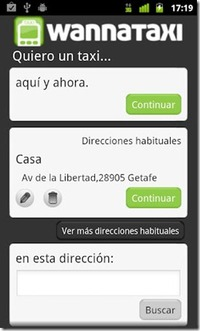Finalmente os presento a Wannataxi, una aplicación más nueva pero que está triunfando en todos los sitios. Wannataxi opera principalmente en Madrid, Barcelona, Valencia y Sevilla aunque realmente esta disponible en toda España y la verdad es que la aplicación es bastante buena. Excelente diseño, excelente usabilidad y con una popularidad que va creciendo poco a poco. Definitivamente vale (y mucho) la pena probarla.
Me quedo con esta.
Seguramente también te interesará...
- Apps Chorras y Rumores de la Semana [#Yseguimosconelfrío...]
- Automatiza tus estados en las redes sociales con Seesmic Ping
- Tutorial para dejar tu android como el primer día
- Manipulando y jugando con WiFis en Android [root]
- Apps Chorras y Rumores de la Semana [#Peroquefríoquehace...]
- Camera MX: La suite fotográfica definitiva para tu Android
- Desmontando un mito: las aplicaciones de iOS fallan más que las de Android
- Las mejores pantallas de bloqueo para Android
Controla el color del LED de tu teléfono con Light Flow
Fri, 10 Feb 2012 07:54:41 PST
Una de las cosas que siempre me ha gustado de las Blackberrys es su sistema de notificaciones mediante el LED. Sabes cuando ha llegado un mail o una llamada perdida, cuándo te estás quedando sin batería o cuando tienes un whatsapp. Pues bien, hoy os presentamos una solución similar para Android: Light Flow, una herramienta [...]
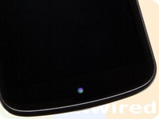
Una de las cosas que siempre me ha gustado de las Blackberrys es su sistema de notificaciones mediante el LED. Sabes cuando ha llegado un mail o una llamada perdida, cuándo te estás quedando sin batería o cuando tienes un whatsapp. Pues bien, hoy os presentamos una solución similar para Android: Light Flow, una herramienta que va a dar una nueva vida a nuestro LED.
Light Flow
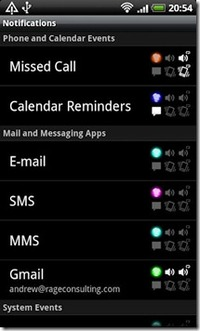El concepto es muy sencilla, controlar los diferentes colores del LED a tu antojo. Podemos establecer que si recibimos una llamada perdida brille de color azul y si por ejemplo recibimos un nuevo mensaje de Whatsapp que sea de color verde. No solo eso, si no que podemos también definir la duración y la rapidez del parpadeo del LED para amoldardo al máximo de nuestras necesidades.
Un punto negativo que tenían las aplicaciones similares es que si tenemos diversas notificaciones, tan solo mostrará la última. Light Flow nos ofrecerá una solución mucho mejor: brillará primero de un color y luego de los siguientes hasta recorrer todas las notificaciones que tengamos.
Los permisos
Una problema que tiene esta aplicación es que al instalarla hay que darle permisos de Accesibilidad. Esto se debe a que necesita estos permisos para poder realizar correctamente las notificaciones. El problema viene dado a que el mensaje por defecto de Android te avisa que “puede recopilar todo lo que escribas, desde datos personales hasta números de tarjetas”. NO, la aplicación no coge los datos de tus tarjetas como piensan muchos, tan solo te dice que existe el peligro de que si escribes tu número se guarde, cosa que en este caso no pasa. Otra cosa que os puede dejar tranquilos es que la aplicación no tiene permiso para acceder a internet, por lo que no se enviará a ningún lugar.
En definitiva, una muy buena aplicación y muy útil que encontraréis en el market, tanto su versión gratuita como la de pago. Por descontado, hace falta ser Root. Por lo visto no hace falta ser root, tan solo en algunos terminales.
A mi no me funciona la aplicación. Los colores no me cambian.
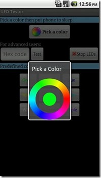Esto se debe básicamente a que no todos los teléfonos soportan notificaciones LED. Unos teléfonos que sí que las soportan son el Galaxy Nexus, el Nexus One, los Xperia, el Droid o el Defy por ejemplo.
Para saber si vuestro teléfono soporta notificaciones LED basta con bajaros esta aplicación y ver si funciona.
Vía: Androidcommunity
Imagen: The Unwired
Seguramente también te interesará...
- Compartir internet (Tethering) sin ROOT, indetectable para las operadoras, de la mano de Koush
- Toma capturas de pantalla con tu Android sin ser Root
- Tres trucos para tu Android: Cambio de idioma rápido, Cambio de nombre de operadora y Optimización de RAM
- Controla tu Android con gestos
- Las mejores BootAnimations para tu Android [ROOT]
- ¿Qué son las cocinas de ROMs Android?
- Cambia las fuentes en tu Android [ROOT]
- Optimiza tu Android: Aprovecha el Wifi al máximo!